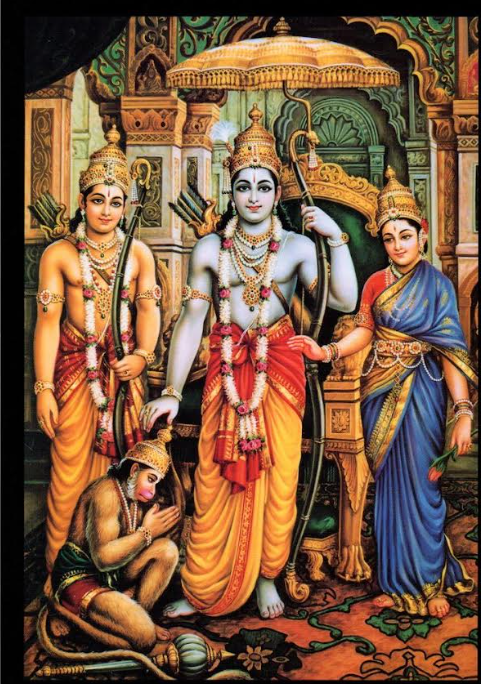

॥ॐ॥
मनोजवं मारुततुल्यवेगं जितेन्द्रियं बुद्धिमतां वरिष्ठम्।
वातात्मजं वानरयूथमुख्यं श्रीरामदूतं शरणं प्रपद्ये॥
Yudhdhakanda Sarga 128
Coronation of Rama

(125 Shlokas)
शिरस्यञ्जलिमाधाय कैकेय्यानन्दवर्धनः ।
बभाषे भरतो ज्येष्ठं रामं सत्यपराक्रमम् ॥6.128.1॥
Word-by-word meaning: शिरसि on the head, अञ्जलिम् folded hands, आधाय placing, कैकेयी-आनन्द-वर्धनः the increaser of Kaikeyi’s joy (Bharata), बभाषे spoke, भरतः Bharata, ज्येष्ठम् to the elder brother, रामम् Rama, सत्य-पराक्रमम् of true valour
कैकेयी-आनन्द-वर्धनः
य्+ई+आ
य्+या यण् सन्धिः
य्या
Anvaya: कैकेय्यानन्दवर्धनः भरतः शिरसि अञ्जलिम् आधाय सत्यपराक्रमं ज्येष्ठं रामं बभाषे।
Simple meaning: Bharata, the increaser of Kaikeyi’s joy, placing his folded hands upon his head, spoke to his elder brother Rama, who possessed true valour.
पूजिता मामिका माता दत्तं राज्यमिदं मम ।
तद्ददामि पुनस्तुभ्यं यथा त्वमददा मम ॥6.128.2॥
Word-by-word meaning: पूजिता honoured, मामिका my own, माता mother, दत्तम् given, राज्यम् kingdom, इदम् this, मम to me, तत् that, ददामि I give, पुनः again, तुभ्यम् to you, यथा just as, त्वम् you, अददाः gave, मम to me
अददाः दा , कर्तरि लङ्लकारः (परस्मैपदम्) , मध्यमपुरुषः , एकवचनम् src. Dhatupatha, Ashtadhyayi
Anvaya: (त्वया) मामिका माता पूजिता। (त्वया) मम इदं राज्यं दत्तम्। तत् यथा त्वं मम अददाः तथा पुनः तुभ्यं ददामि।
Simple meaning: “My mother was honoured by you. This kingdom was given to me by you. Just as you once gave it to me, I now give it back to you.
धुरमेकाकिनान्यस्तां वृषभेण बलीयसा ।
किशोरवद्गुरुंभारं न वोढुमहमुत्सहे ॥6.128.3॥
Word-by-word meaning: धुरम् the yoke (burden of rule), एकाकिना by one alone, न्यस्ताम् placed, वृषभेण by a bull, बलीयसा very strong, किशोरवत् like a young calf, गुरुम् heavy, भारम् burden, न not, वोढुम् to bear, अहम् I, उत्सहे am able
Anvaya: बलीयसा एकाकिना वृषभेण न्यस्तां धुरं किशोरवत् अहं गुरुम् भारं वोढुं न उत्सहे।
Simple meaning: “Just as a young calf cannot bear the heavy yoke meant for a strong bull, I am not able to bear this great burden of the kingdom.
वारिवेगेन महता भिन्नस्सेतुरिव क्षरन् ।
दुर्बन्धनमिदं मन्ये राज्यच्छ्रिदमसंवृतम् ॥6.128.4॥
Word-by-word meaning: वारि-वेगेन by the force of water, महता great, भिन्नः broken, सेतुः a dam or bridge, इव like, क्षरन् leaking, दुर्बन्धनम् is difficult to be controlled, इदम् this, मन्ये I think, राज्य-च्छ्रिदम् weak point in administration of the kingdom, असंवृतम् not well protected
Anvaya: इदम् असंवृतं राज्यच्छ्रिदं – महता वारिवेगेन भिन्नः क्षरन् सेतुः इव – दुर्बन्धनं मन्ये।
Simple meaning: “This weak point in the administration of the kingdom, which not protected, is like a cracked dam which will leak if there is a huge on rush of water, and is difficult to be controlled I think.
गतिं खरेवाश्वस्य हंसस्येव च वायसः ।
नान्वेतुमुत्सहे राम तव मार्गमरिन्दम ॥6.128.5॥
Word-by-word meaning: गतिम् the gait or course, खरः a donkey, इव like, अश्वस्य of a horse, हंसस्य of a swan, इव like, च and, वायसः of a crow, न not, अन्वेतुम् to follow, उत्सहे am able, राम O Rama, तव your, मार्गम् path, अरिन्दम O destroyer of enemies
Anvaya: अरिन्दम राम! खरः अश्वस्य गतिम् इव, वायसः हंसस्य (गतिम्) इव, अहं तव मार्गम् अन्वेतुं न उत्सहे।
Simple meaning: “O Rama, destroyer of enemies! Just as a donkey cannot follow the gait of a horse or a crow the path of a swan, I am not able to follow your path.
यथा चारोपितो वृक्षो जातश्चान्तर्निवेशने ।
महांश्चसुदुरारोहो महास्कन्दः प्रशाखवान् ॥6.128.6॥
Word-by-word meaning: यथा just as, च and, आरोपितः planted, वृक्षः a tree, जातः grown, च and, अन्तः-निवेशने in a courtyard or enclosure, महान् great, च and, सुदुरारोहः very difficult to climb, महा-स्कन्दः having a great trunk, प्रशाखवान् with many branches
Anvaya: च यथा अन्तर्निवेशने आरोपितः वृक्षः महान् जातः च प्रशाखवान् महास्कन्दः सुदुरारोहः…
Simple meaning: “And just as a tree planted in a courtyard grows very large, with a great trunk and many branches, and becomes difficult to climb…
शीर्येत पुष्पितो भूत्वा न फलानि प्रदर्शयन् ।
तस्यनानुभवेदर्थं यस्य हेतोस्सरोपितः ॥6.128.7॥
Word-by-word meaning: शीर्येत would perish, पुष्पितः having flowered, भूत्वा having become, न not, फलानि fruits, प्रदर्शयन् producing, तस्य of that, न not, अनुभवेत् would experience, अर्थम् the purpose or benefit, यस्य for which, हेतोः purpose, सः it, रोपितः was planted
Anvaya: …पुष्पितः भूत्वा फलानि न प्रदर्शयन् शीर्येत, यः हेतोः सः रोपितः, तस्य अर्थं न अनुभवेत्।
Simple meaning: … though it blossoms, perishes without producing fruits, the purpose for which it was planted is not fulfilled.
एषोपमा महाबाहो त्वमर्थं वेत्तुमर्हसि ।
यद्यस्मान् मनुजेन्द्र त्वं भर्ता भृत्यान् न शाधि हि ॥6.128.8॥
Word-by-word meaning: एषा this, उपमा comparison, महाबाहो O mighty-armed one, त्वम् you, अर्थम् the meaning, वेत्तुम् to understand, अर्हसि ought, यदि if, अस्मान् us, मनुज-इन्द्र O lord of men, त्वम् you, भर्ता master, भृत्यान् servants, न not, शाधि rule or protect, हि indeed
Anvaya: महाबाहो मनुजेन्द्र! एषा उपमा — त्वम् अर्थं वेत्तुम् अर्हसि। यदि त्वं भर्ता अस्मान् भृत्यान् न हि शाधि।
Simple meaning: “O mighty-armed Rama, lord of men! You should understand the meaning of this comparison. If you, our master, do not rule and guide us, your servants, then our purpose cannot be fulfilled.
जगदद्याभिषिक्तं त्वामनुपश्यतु राघव ।
प्रतपन्तमिवादित्यं मध्याह्ने दीप्ततेजसम् ॥6.128.9॥
Word-by-word meaning: जगत् the world, अद्य today, अभिषिक्तम् consecrated, त्वाम् you, अनुपश्यतु may behold, राघव O Raghava, प्रतपन्तम् blazing, इव like, आदित्यम् the sun, मध्याह्ने at midday, दीप्त-तेजसम् shining with radiant splendour
Anvaya: राघव! अद्य जगत् – मध्याह्ने दीप्ततेजसं प्रतपन्तम् आदित्यम् इव – अभिषिक्तं त्वाम् अनुपश्यतु।
Simple meaning: “O Raghava! Today let the world behold you consecrated as king, shining with blazing splendour like the sun at midday.
तूर्यसङ्घान्तिर्घोषैः काञ्चीनूपुरनिःस्वनैः ।
मधुरैर्गीतशब्दैश्च प्रतिबुध्यस्व शेष्व च ॥6.128.10॥
Word-by-word meaning: तूर्य-सङ्घ-निर्घोषैः by the loud sounds of musical instruments, काञ्ची-नूपुर-निःस्वनैः by the jingling of girdles and anklets, मधुरैः sweet, गीत-शब्दैः by sounds of songs, च and, प्रतिबुध्यस्व awaken, शेष्व may you sleep, च and
शेष्व (to sleep) शी , कर्तरि लोट्लकारः (आत्मनेपदम्) , मध्यमपुरुषः , एकवचनम् src. Dhatupatha. Ashtadhyayi
Anvaya: तूर्यसङ्घनिर्घोषैः काञ्चीनूपुरनिःस्वनैः मधुरैः गीतशब्दैः शेष्व प्रतिबुध्यस्व च।
Simple meaning: “May you awaken from your sleep to the loud sounds of musical instruments, the jingling of girdles and anklets, and the sweet notes of songs.
Note: Bharata is saying that when Rama becomes the king, he can enjoy these pleasures. Kings are awakened from sleep by chanting of auspicious hymns and music.
यावदावर्ततेचक्रं यावती च वसुन्धरा ।
तावत्त्वमिहलोकस्य स्वामित्वमनुवर्तय ॥6.128.11॥
Word-by-word meaning: यावत् as long as, आवर्तते turns, चक्रम् the wheel, यावती as far as, च and, वसुन्धरा the earth, तावत् so long, त्वम् you, इह in this world, लोकस्य of the people, स्वामित्वम् sovereignty, अनुवर्तय uphold
Anvaya: यावत् चक्रम् आवर्तते, यावती च वसुन्धरा, तावत् त्वम् इह लोकस्य स्वामित्वम् अनुवर्तय।
Simple meaning: “As long as the wheel of time turns and as far as the earth extends, so long should you uphold sovereignty over this world.”
भरतस्य वचः श्रुत्वा रामः परपुरञ्जयः ।
तथेति प्रतिजग्राह निषसादासने शुभे ॥6.128.12॥
Word-by-word meaning: भरतस्य of Bharata, वचः words, श्रुत्वा having heard, रामः Rama, पर-पुरञ्जयः conqueror of enemy cities, तथा इति so be it, प्रतिजग्राह accepted, निषसाद sat down, आसने on the seat, शुभे auspicious
Anvaya: परपुरञ्जयः रामः भरतस्य वचः श्रुत्वा ‘तथा’ इति प्रतिजग्राह, शुभे आसने निषसाद।
Simple meaning: Rama, the conqueror of enemy cities, having heard Bharata’s words, accepted them saying “so be it” and sat down on the auspicious seat.
ततश्शत्रुघ्नवचनान्निपुणाः श्मश्रुवर्धनाः ।
सुखहस्ताः सुशीघ्राश्च राघवं पर्यवारयन् ॥6.128.13॥
Word-by-word meaning: ततः then, शत्रुघ्न-वचनात् on the words of Shatrughna, निपुणाः skilled, श्मश्रु-वर्धनाः barbers, सुख-हस्ताः having gentle hands, सु-शीघ्राः very swift, च and, राघवम् Rama, पर्यवारयन् attended upon
Anvaya: ततः शत्रुघ्नवचनात् निपुणाः श्मश्रुवर्धनाः सुखहस्ताः सुशीघ्राः च राघवं पर्यवारयन्।
Simple meaning: Then, at the command of Shatrughna, skilled barbers with gentle hands and great speed attended upon Rama.
पूर्वं तु भरते स्नाते लक्ष्मणे च महाबले ।
सुग्रीवे वानरेन्द्रे च राक्षसेन्द्रे विभीषणे ॥6.128.14॥
Word-by-word meaning: पूर्वम् first, तु indeed, भरते Bharata, स्नाते having bathed, लक्ष्मणे Lakshmana, च and, महाबले the mighty one, सुग्रीवे Sugriva, वानरेन्द्रे king of vanaras, च and, राक्षसेन्द्रे king of rakshasas, विभीषणे Vibhishana
Anvaya: पूर्वं तु भरते स्नाते, महाबले लक्ष्मणे च, वानरेन्द्रे सुग्रीवे च, राक्षसेन्द्रे विभीषणे च।
Simple meaning: First, Bharata bathed, and then the mighty Lakshmana, Sugriva the king of the vanaras, and Vibhishana the king of the rakshasas.
विशोधितजटस्स्नातश्चित्रमाल्यानुलेपनः ।
महार्हवसनोपेतस्तस्थौ तत्र श्रिया ज्वलन् ॥6.128.15॥
Word-by-word meaning: विशोधित-जटः having cleansed matted hair (Rama), स्नातः bathed, चित्र-माल्य-अनुलेपनः adorned with beautiful garlands and unguents, महा-अर्ह-वसन-उपेतः dressed in very costly garments, तस्थौ stood, तत्र there, श्रिया with splendour, ज्वलन् shining
विशोधित वि-°शोधित mfn. purified, cleansed, freed from soil or taint, src. Kosha Ashtadhyayi
Anvaya: विशोधितजटः स्नातः चित्रमाल्यानुलेपनः महार्हवसनोपेतः (रामः) तत्र श्रिया ज्वलन् तस्थौ।
Simple meaning: Having cleansed his matted hair and bathed, adorned with beautiful garlands and perfumes, and dressed in splendid garments, Rama stood there shining with great splendour.
प्रतिकर्म च रामस्य कारयामास वीर्यवान् ।
लक्ष्मणस्य च लक्ष्मीवानिक्ष्वाकुकुलवर्धनः ॥6.128.16॥
Word-by-word meaning: प्रतिकर्म grooming or ceremonial preparation, च and, रामस्य of Rama, कारयामास caused to be done, वीर्यवान् the valiant one, लक्ष्मणस्य of Lakshmana, च and, लक्ष्मीवान् the illustrious one, इक्ष्वाकु-कुल-वर्धनः the enhancer of the Ikshvaku lineage (Shatrughna)
Anvaya: वीर्यवान् लक्ष्मीवान् इक्ष्वाकुकुलवर्धनः (शत्रुघ्नः) रामस्य च लक्ष्मणस्य च प्रतिकर्म कारयामास।
Simple meaning: The valiant and illustrious Shatrughna, the enhancer of the Ikshvaku lineage, had the ceremonial preparations performed for both Rama and Lakshmana.
प्रतिकर्म च सीतायास्सर्वा दशरथस्त्रियः ।
आत्मनैव तदा चक्रुर्मनस्विन्यो मनोहरम् ॥6.128.17॥
Word-by-word meaning: प्रतिकर्म grooming or ceremonial preparation, च and, सीतायाः of Sita, सर्वाः all, दशरथ-स्त्रियः wives of Dasharatha, आत्मना by themselves, एव indeed, तदा then, चक्रुः performed, मनस्विन्यः noble ladies, मनोहरम् charming
Anvaya: तदा मनस्विन्यः सर्वाः दशरथस्त्रियः आत्मना एव सीतायाः मनोहरं प्रतिकर्म चक्रुः।
Simple meaning: Then, all the noble wives of Dasharatha themselves performed the charming ceremonial adornment of Sita.
ततोवानरपत्नीनां सर्वासामेव शोभनम् ।
चकार यत्नात् कौसल्या प्रहृष्टा पुत्रवत्सला ॥6.128.18॥
Word-by-word meaning: ततः then, वानर-पत्नीनाम् of the wives of the vanaras, सर्वासाम् of all, एव indeed, शोभनम् adornment, चकार did, यत्नात् with effort, कौसल्या Kausalya, प्रहृष्टा delighted, पुत्र-वत्सला affectionate to her sons
Anvaya: ततः प्रहृष्टा पुत्रवत्सला कौसल्या एव सर्वासां वानरपत्नीनां यत्नात् शोभनं चकार।
Simple meaning: Then the delighted Kausalya who was delighted at Rama coming back, herself, carefully arranged beautiful adornments for all the wives of the vanaras.
ततश्शत्रुघ्नवचनात् सुमन्त्रो नाम सारथिः ।
योजयित्वाभिचक्राम रथंसर्वाङ्गशोभनम् ॥6.128.19॥
Word-by-word meaning: ततः then, शत्रुघ्न-वचनात् on the words of Shatrughna, सुमन्त्रः Sumanta, नाम named, सारथिः charioteer, योजयित्वा having yoked, अभिचक्राम brought forward, रथम् chariot, सर्वाङ्ग-शोभनम् adorned in all parts
Anvaya: ततः शत्रुघ्नवचनात् सुमन्त्रः नाम सारथिः सर्वाङ्गशोभनं रथं योजयित्वा अभिचक्राम।
Simple meaning: Then, at the command of Shatrughna, the charioteer named Sumantra yoked and brought forward a beautifully adorned chariot.
अर्कमण्डलसङ्काशं दिव्यं दृष्टवा रथं स्थितम् ।
आरुरोह महाबाहू रामः परपुरञ्जयः ॥6.128.20॥
Word-by-word meaning: अर्क-मण्डल-सङ्काशम् shining like the disc of the sun, दिव्यम् divine, दृष्टवा seeing, रथम् chariot, स्थितम् stationed, आरुरोह mounted, महा-बाहुः mighty-armed, रामः Rama, पर-पुरञ्जयः conqueror of enemy cities
Anvaya: परपुरञ्जयः महाबाहुः रामः अर्कमण्डलसङ्काशं दिव्यं रथं स्थितं दृष्टवा आरुरोह।
Simple meaning: The mighty-armed Rama, conqueror of enemy cities, saw the divine chariot shining like the sun’s disc, and mounted it.
सुग्रीवोहनुमांश्चैव महेन्द्रसदृशद्युती ।
स्नातौ दिव्यनिभैर्वस्त्रैर्जग्मतुश्शुभकुण्डलौ ॥6.128.21॥
Word-by-word meaning: सुग्रीवः Sugriva, हनुमान् Hanuman, च and, एव likewise, महेन्द्र-सदृश-द्युती with splendor like Indra, स्नातौ both of them having bathed, दिव्य-निभैः with heavenly-like, वस्त्रैः garments, जग्मतुः they went, शुभ-कुण्डलौ auspicious earrings
Anvaya: स्नातौ सुग्रीवः हनुमान् च एव शुभकुण्डलौ दिव्यनिभैः वस्त्रैः महेन्द्रसदृशद्युती जग्मतुः।
Simple meaning: Having bathed, Sugriva and Hanuman wearing beautiful clothes and auspicious earrings shining with splendour like Indra, they went
सर्वाभरणजुष्टाश्चययुस्ताश्शुभकुण्डलाः।
सुग्रीवपत्नयः सीता च द्रष्टुं नगरमुत्सुकाः ॥6.128.22॥
Word-by-word meaning: सर्व-आभरण-जुष्टाः adorned with all ornaments, च and, ययुः departed, ताः those, शुभ-कुण्डलाः wearing auspicious earrings, सुग्रीव-पत्नयः wives of Sugriva, सीता Sita, च and, द्रष्टुम् to see, नगरम् the city, उत्सुकाः eager
Anvaya: सर्वाभरणजुष्टाः शुभकुण्डलाः सुग्रीवपत्नयः च, सीता च नगरं द्रष्टुम् उत्सुकाः ययुः।
Simple meaning: Sugriva’s wives, adorned with all ornaments and auspicious earrings, and Sita too eager to see the city, went along.
Note: Rama and his party were at Nandigrama. Then after having bath and adorning themselves, all of them proceeded to Ayodhya.
अयोध्यायां तु सचिवा राज्ञो दशरथस्य च ।
पुरोहितं पुरस्कृत्य मन्त्रयामासुरर्थवत् ॥6.128.23॥
Word-by-word meaning: अयोध्यायाम् in Ayodhya, तु indeed, सचिवाः ministers, राज्ञः of the king, दशरथस्य of Dasharatha, च and, पुरोहितम् the priest, पुरस्कृत्य having placed in front, मन्त्रयामासुः consulted, अर्थवत् with regard to the matter
Anvaya: अयोध्यायां तु सचिवाः राज्ञः दशरथस्य च पुरोहितं पुरस्कृत्य अर्थवत् मन्त्रयामास।
Simple meaning: In Ayodhya, the ministers of King Dasharatha placed the priest as the head and consulted him regarding the matter about Rama’s coronation.
अशोको विजयश्चैव सिद्धार्थश्च समाहिताः ।
मन्त्रयन्रामवृध्यर्थमृध्यर्थं नगरस्य च ॥6.128.24॥
Word-by-word meaning: अशोकः Ashoka, विजयः Vijaya, च and, एव also, सिद्धार्थः Siddhartha, च and, समाहिताः assembled, मन्त्रयन् consulting, राम-वृद्धि-अर्थम् for the prosperity of Rama, ऋद्धि-अर्थम् for success/prosperity/growth, नगरस्य च and of the city
Anvaya: अशोकः विजयः च एव सिद्धार्थः च समाहिताः रामवृद्ध्यर्थं नगरस्य ऋद्ध्यर्थं च मन्त्रयन्।
Simple meaning: Ashoka, Vijaya, and Siddhartha, having assembled, consulted regarding the prosperity of Rama and the welfare of the city.
सर्वमेवाभिषेकार्थं जयार्हस्य महात्मनः ।
कर्तुमर्हथ रामस्य यद्यन्मङ्गलपूर्वकम् ॥6.128.25॥
Word-by-word meaning: सर्वम् all, एव indeed, अभिषेक-अर्थम् for the consecration, जय-अर्हस्य of the worthy-to-be-victorious, महात्मनः great-souled one, कर्तुम् to perform, अर्हथ you all should do, रामस्य of Rama, यत् यत् whatever, मङ्गल-पूर्वकम् auspicious
Anvaya: जयार्हस्य महात्मनः रामस्य अभिषेकार्थं यत् यत् मङ्गलपूर्वकं सर्वं कर्तुम् अर्हथ।
Simple meaning: “Whatever auspicious preparations are required for the consecration of the great-souled Rama, worthy of victory, all that should be performed.”
इति ते मन्त्रिणस्सर्वे सन्दिश्य च पुरोहितम् ।
नगरान्निर्ययुस्तूर्णं रामदर्शनबुद्धयः ॥6.128.26॥
Word-by-word meaning: इति thus, ते those, मन्त्रिणः ministers, सन्दिश्य having informed, च and, पुरोहितम् the priest, नगरात् from the city, निर्ययुः went forth, तूर्णम् quickly, राम-दर्शन-बुद्धयः those eager to see Rama
Anvaya: एते मन्त्रिणः पुरोहितं सन्दिश्य रामदर्शनबुद्धयः नगरात् तुर्णं निर्ययुः।
Simple meaning: Thus, having informed the priest, all the ministers quickly left the city, eager to see Rama.
हरियुक्तं सहस्राक्षो रथमिन्द्रेवानघः ।
प्रययौ रथमास्थाय रामो नगरमुत्तमम् ॥6.128.27॥
Word-by-word meaning: हरि-युक्तम् adorned with green horses, सहस्राक्षः thousand-eyed (Indra), रथम् chariot, इन्द्रः इव like Indra, अनघः sinless, प्रययौ went, रथम् chariot, आस्थाय having mounted, रामः Rama, नगरम् city, उत्तमम् splendid
Anvaya: सहस्राक्षः इन्द्रः हरियुक्तं रथम् इव – अनघः रामः उत्तमं रथम् आस्थाय नगरं प्रययौ।
Simple meaning: Like the thousand-eyed Indra on his chariot yoked to green horses, the sinless Rama mounted his excellent chariot and proceeded towards the city.
जग्राह भरतो रश्मीन् शत्रुघ्नश्छत्रमाददे ।
लक्ष्मणो व्यजनं तस्य मूर्ध्नि सम्पर्यवीजयत् ॥6.128.28॥
Word-by-word meaning: जाग्राह took up, भरतः by Bharata, रश्मीन् reins (of the chariot), शत्रुघ्नः Shatrughna, छत्रम् umbrella, आददे held, लक्ष्मणः Lakshmana, व्यजनम् fan, तस्य of him, मूर्ध्नि on the head, सम्पर्यवीजयत् fanned
Anvaya: भरतः रश्मीन् जाग्राह, शत्रुघ्नः तस्य मूर्ध्नि छत्रम् आददे, लक्ष्मणः व्यजनं सम्पर्यवीजयत्।
Simple meaning: Bharata took the reins of the chariot, Shatrughna held an umbrella over Rama’s head, and Lakshmana fanned him.
श्वेतं च वालव्यजनं जगृहे परितस्स्थितः ।
अपरं चन्द्रसङ्काशं राक्षसेन्द्रो विभीषणः ॥6.128.29॥
Word-by-word meaning: श्वेतम् white, च and, वाल-व्यजनम् a fan made of yak’s hair, जगृहे held, परितः near, स्थितः standing nearby, अपरम् another, चन्द्र-सङ्काशम् shining like the moon, राक्षसेन्द्रः king of the rakshasas, विभीषणः Vibhishana
Anvaya: परितः स्थितः राक्षसेन्द्रः विभीषणः श्वेतम् अपरं चन्द्रसङ्काशं वालव्यजनं जगृहे।
Simple meaning: King of the rakshasas, Vibhishana who was standing nearby, held another white yak-tail fan which was white like the moon.
ऋषिसङ्घैस्तदाकाशे देवैश्च समरुद्गणैः ।
स्तूयमानस्य रामस्य शुश्रुवे मधुरध्वनिः ॥6.128.30॥
Word-by-word meaning: ऋषि-सङ्घैः by groups of sages, तदा then, आकाशे in the sky above, देवैः by gods, च and, स-मरुत्-गणैः by hosts of Maruts, स्तूयमानस्य praised, रामस्य of Rama, शुश्रुवे was heard, मधुर-ध्वनिः sweet sounds
Anvaya: तदा आकाशे ऋषिसङ्घैः, देवैः च समरुद्गणैः रामस्य स्तूयमानस्य, मधुरध्वनिः शुश्रुवे।
Simple meaning: In the sky above, groups of sages, gods, and Marut-hosts praised Rama, and their sweet sounds were heard everywhere.
ततः शत्रुञ्जयं नाम कुञ्जरं पर्वतोपमम् ।
आरुरोह महातेजास्सुग्रीवः प्लवगर्षभः ॥6.128.31॥
Word-by-word meaning: ततः then, शत्रुञ्जयम् Shatrunjaya, नाम named, कुञ्जरम् elephant, पर्वत-उपमम् like a mountain, आरुरोह mounted, महा-तेजाः mighty in splendour, सुग्रीवः Sugriva, प्लवगर्षभः bull amongst the vanaras
Anvaya: ततः प्लवगर्षभः महातेजाः सुग्रीवः शत्रुञ्जयं नाम पर्वतोपमं कुञ्जरम् आरुरोह।
Simple meaning: Then the bull amongst the vanaras, mighty Sugriva, mounted a mountain-like elephant named Shatrunjaya.
नवनागसहस्राणि ययुरास्थाय वानराः ।
मानुषं विग्रहं कृत्वा सर्वाभरणभूषिताः ॥6.128.32॥
Word-by-word meaning: नव-नाग-सहस्राणि nine thousand elephants, ययुः went, आस्थाय having mounted, वानराः the vanaras, मानुषम् human, विग्रहम् form, कृत्वा having assumed, सर्व-आभरण-भूषिताः adorned with all ornaments
Anvaya: मानुषं विग्रहं कृत्वा सर्वाभरणभूषिताः वानराः नवनागसहस्राणि आस्थाय, ययुः।
Simple meaning: Assuming human forms, adorned with all kinds of ornaments, the vanaras mounted nine thousand elephants and proceeded towards the city.
शङ्खशब्दप्रणादैश्च दुन्दुभीनां च निस्स्वनैः ।
प्रययौ पुरुषव्याघ्रस्तां पुरीं हर्म्यमालिनीम् ॥6.128.33॥
Word-by-word meaning: शङ्ख-शब्द-प्रणदैः with the sounding of conches, च and, दुन्दुभीनाम् drum-like instruments, च and, निस्स्वनैः resounding, प्रययौ went, पुरुष-व्याघ्रः tiger among men Rama (valiant hero), ताम् that, पुरीम् city, हर्म्य-मालिनीम् with garlands (rows) of mansions
Anvaya: शङ्खशब्दप्रणादैः च दुन्दुभीनां निस्स्वनैः पुरुषव्याघ्रः हर्म्यमालिनीं तां पुरीं प्रययौ।
Simple meaning: With resounding of conches and drums, the tiger among men Rama, proceeded to the splendid, beautifully adorned city with rows of mansions.
ददृशुस्ते समायान्तं राघवं सपुरःसरम् ।
विराजमानं वपुषा रथेनातिरथं तदा ॥6.128.34॥
Word-by-word meaning: ददृशुः they saw, ते they, समायान्तम् approaching, राघवम् Rama, स-पुरःसरम् along with his retinue moving ahead, विराजमानम् shining, वपुषा with his body, रथेन with his chariot, अतिरथम् the one who was excellent chariot warrior, तदा then
Anvaya: तदा ते अतिरथं सपुरःसरं वपुषा विराजमानं राघवं रथेन समायान्तं ददृशुः।
Simple meaning: Then the people of Ayodhya saw the excellent chariot warrior, with his retinue moving ahead, radiantly seated and arriving in his chariot.
ते वर्धयित्वा काकुत्स्थं रामेण प्रतिनन्दिताः ।
अनुजग्मुर्महात्मानं भ्रातृभिः परिवारितम् ॥6.128.35॥
Word-by-word meaning: ते they, वर्धयित्वा having honoured, काकुत्स्थम् Kakutstha (Rama), रामेण by Rama, प्रतिनन्दिताः were responded in kind, अनुजग्मुः they went along, महात्मानम् the great-souled one, भ्रातृभिः by brothers, परिवारितम् surrounded
Anvaya: ते काकुत्स्थं वर्धयित्वा, रामेण प्रतिनन्दिताः, भ्रातृभिः परिवारितं महात्मानम् अनुजग्मुः।
Simple meaning: They honoured Kakutstha (Rama), and were responded to by Rama in kind, and went along with the great-souled one who was surrounded by his brothers.
अमात्यैर्ब्राह्मणैश्चैव तथा प्रकृतिभिर्वृतः ।
श्रिया विरुरुचे रामो नक्षत्रैरिव चन्द्रमाः ॥6.128.36॥
Word-by-word meaning: अमात्यैः by ministers, ब्राह्मणैः by brahmanas, च and, एव also, तथा likewise, प्रकृतिभिः by the citizens, वृतः surrounded, श्रिया with splendour, विरुरुचे shone forth, रामः Rama, नक्षत्रैः like the stars, इव as, चन्द्रमाः and the moon
Anvaya: अमात्यैः ब्राह्मणैः च तथा प्रकृतिभिः वृतः रामः – नक्षत्रैः चन्द्रमाः इव – श्रिया विरुरुचे।
Simple meaning: Surrounded by ministers, brahmanas, and citizens, Rama shone forth with splendour like the moon surrounded by stars.
स पुरोगामिभिस्तूर्यैस्तालस्वस्तिकपाणिभिः ।
प्रव्याहरद्भिर्मुदितैर्मङ्गलानि वृतो ययौ ॥6.128.37॥
Word-by-word meaning: सः he, पुरोगामिभिः by the vanguard, तूर्यैः bands, ताल-स्वस्तिक-पाणिभिः with the ones holding cymbals and swastika, प्रव्याहरद्भिः singing festive songs, मुदितैः joyful, मङ्गलानि auspicious, वृतः surrounded, ययौ proceeded
Anvaya: सः पुरोगामिभिः तूर्यैः मुदितैः मङ्गलानि प्रव्याहरद्भिः वृतः ययौ।
Simple meaning: He, surrounded by the joyous vanguard who were holding cymbals and swastika, and were singing auspicious songs, proceeded.
अक्षतं जातरूपं च गावः कन्यास्सहद्विजाः ।
नरा मोदकहस्ताश्च रामस्य पुरतो ययुः ॥6.128.38॥
Word-by-word meaning: अक्षतम् rice grains, जात-रूपम् appearing gold in colour, च and, गावः the cows, कन्याः girls, सह-द्विजाः with brahmins, नराः men, मोदक-हस्ताः bearing modakas (cakes), च and, रामस्य of Rama, पुरतः in front, ययुः went
Anvaya: जातरूपं अक्षतं च गावः कन्याः सहद्विजाः मोदकहस्ताः नराः रामस्य पुरतः ययुः।
Simple meaning: Taking along rice which was smeared with turmeric thus giving them a golden appearance, cows, girls, brahmins, and men bearing modakas went in front of Rama.
सख्यं च रामस्सुग्रीवे प्रभावं चानिलात्मजे ।
वानराणां च तत्कर्म ह्याचचक्षेऽथ मन्त्रिणाम् ॥6.128.39॥
Word-by-word meaning: सख्यम् friendship, च and, रामः Rama, सुग्रीवे to Sugriva, प्रभावम् power, च and, अनिल-आत्मजे Hanuman (son of the wind), वानराणाम् of the vanaras, च and, तत् that, कर्म action, हि indeed, आचचक्षे declared, अथ then, मन्त्रिणाम् by the ministers
Anvaya: अथ रामः सुग्रीवे सख्यं च, अनिलात्मजे प्रभावं च, वानराणां तत् कर्म च, मन्त्रिणाम् आचचक्षे।
Simple meaning: Then, Rama narrated about his friendship with Sugriva and the power of Hanuman and the great act of the vanaras to the ministers.
श्रुत्वा च विस्मयं जग्मुरयोध्यापुरवासिनः ।
वानराणां च तत्कर्म राक्षसानां च तद्बलम् ।
विभीषणस्य संयोगमाचचक्षेऽथ मन्त्रिणाम् ॥6.128.40॥
Word-by-word meaning: श्रुत्वा having heard, च and, विस्मयम् astonishment, जग्मुः went, अयोध्या-पुरवासिनः the residents of Ayodhya, वानराणाम् of the vanaras, च and, तत् that, कर्म action, राक्षसानाम् of the rakshasas, च and, तत् that, बलम् strength, विभीषणस्य Vibheeshana, संयोगम् friendship, आचचक्षे narrated, अथ and then, मन्त्रिणाम् ministers
Anvaya: अथ विभीषणस्य संयोगं मन्त्रिणाम् आचचक्षे। अयोध्यापुरवासिनः वानराणां च तत्कर्म राक्षसानां च तद्बलं श्रुत्वा विस्मयं जग्मुः।
Simple meaning: Then he told about his friendship with Vibhishana to the ministers. Having heard of the deeds of the vanaras and the strength of the rakshasas, the residents of Ayodhya were astonished.
द्युतिमानेतदाख्याय रामो वानरसंयुतः ।
हृष्टपुष्टजनाकीर्णमयोध्यां प्रविवेश सः ॥6.128.41॥
Word-by-word meaning: द्युतीमान् shining, एतत् like this, आख्याय described, रामः Rama, वानर-संयुक्तः accompanied by vanaras, हृष्ट-पुष्ट-जन-आकीर्णम् filled with happy and strong people, अयोध्याम् Ayodhya, प्रविवेश entered, सः he
Anvaya: द्युतीमान् सः रामः वानरसंयुक्तः, हृष्टपुष्टजनाकीर्णाम् अयोध्यां प्रविवेश।
Simple meaning: Radiant Rama, accompanied by the vanaras, entered Ayodhya, which was filled with happy and strong people.
ततो ह्यभ्युच्छ्रयन् पौराः पताकाश्च गृहे गृहे ।
ऐक्ष्वाकाध्युषितं रम्यमाससाद पितुर्गृहम् ॥6.128.42॥
Word-by-word meaning: ततः then, हि indeed, अभ्युच्छ्रयन् raising, पौराः the citizens, पताकाः flags, च and, गृहे गृहे on every house, ऐक्ष्वाक-अध्युषितम् inhabited by the ones belonging to the Ikshvaku race, रम्यम् beautiful, आससाद approached, पितुः father’s, गृहम् house
ऐक्ष्वाक ऐक्ष्वाक a. [इक्ष्वाकु-अण्] Belonging to Ikshvaku . Src, Kosha Ashtadhyayi
अध्युषित - अधि-उषित mfn. (√ वस्) inhabited Src, Kosha Ashtadhyayi
Anvaya: ततः गृहे गृहे पौराः पताकाः अभ्युच्छ्रयन् च, ऐक्ष्वाकाध्युषितं रम्यं पितुः गृहम् आससाद।
Simple meaning: Then the citizens raised flags on every house, and Rama approached his father’s beautiful house inhabited by the Ikshvaku dynasty.
अथाब्रवीद्राजपुत्रो भरतं धर्मिणां वरम् ।
अर्धोपहितया वाचा मधुरं रघुनन्दनः ॥6.128.43॥
Word-by-word meaning: अथ then, अब्रवीत् spoke, राज-पुत्रः the king’s son, भरतम् to Bharata, धर्मिणाम् of the righteous, वरम् excellent, अर्ध-उपहितया meaningful, वाचा voice, मधुरम् sweet, रघु-नन्दनः delight of the race of Raghu
Anvaya: अथ रघुनन्दनः राजपुत्रः धर्मिणां वरं भरतम् अर्थोपहितया वाचा मधुरम् अब्रवीत् ।
Simple meaning: Then, the delight of the race of Raghu (Rama) spoke to Bharata, the best among the righteous, meaningful words in a gentle voice.
पितुर्भवनमासाद्य प्रविश्य च महात्मनः ।
कौसल्यां च सुमित्रां च कैकेयीमभिवाद्य च॥6.128.44॥
Word-by-word meaning: पितुः father, भवनम् house, आसाद्य having reached, प्रविश्य having entered, च and, महात्मनः the great-souled one, कौसल्याम् Kausalya, च and, सुमित्राम् Sumitra, च and, कैकेयीम् Kaikeyi, अभिवाद्य having greeted, च and
Anvaya: महात्मनः पितुः भवनम् आसाद्य प्रविश्य, कौसल्यां च सुमित्रां च कैकेयीम् अभिवाद्य च।
Simple meaning: Rama after reaching and entering his great father’s house, respectfully greeted Kausalya, Sumitra, and Kaikeyi.
तच्च मद्भवनं श्रेष्ठं साशोकवनिकं महत् ।
मुक्तावैदूर्यसङ्कीर्णं सुग्रीवाय निवेदय ॥6.128.45॥
Word-by-word meaning: तत् च and that, मत्-भवनम् my residence, श्रेष्ठम् excellent, स-अशोक-वनिकम् with Ashoka gardens, महत् vast, मुक्ता-वैदूर्य-सङ्कीर्णम् adorned with pearls and lapis lazuli, सुग्रीवाय to Sugriva, निवेदय offer
Anvaya: श्रेष्ठं साशोकवनिकं महत् मुक्तावैदूर्यसङ्कीर्णं तत् मद्भवनं सुग्रीवाय निवेदय।
Simple meaning: “Give the splendid, excellent mansion attached to Ashoka grove, encrusted with cat's eye gems and pearls to Sugriva.”, (said Rama).
तस्य तद्वचनं श्रुत्वा भरतस्सत्यविक्रमः ।
हस्ते गृहीत्वा सुग्रीवं प्रविवेश तमालयम् ॥6.128.46॥
Word-by-word meaning: तस्य of that, तत्-वचनम् words, श्रुत्वा having heard, भरतः Bharata, सत्य-विक्रमः the true and valiant one, हस्ते by his hand, गृहीत्वा having taken, सुग्रीवम् Sugriva, प्रविवेश entered, तम् that, आलयम् the mansion
Anvaya: तस्य तद्वचनं श्रुत्वा सत्यविक्रमः भरतः सुग्रीवं हस्ते गृहीत्वा तम् आलयं प्रविवेश।
Simple meaning: Having heard those words, Bharata, the true and valiant one, took Sugriva by the hand and entered that mansion.
ततस्तैलप्रदीपांश्च पर्यङ्कास्तरणानि च ।
गृहीत्वा विविशुः क्षिप्रं शत्रुघ्नेन प्रचोदिताः॥6.128.47॥
Word-by-word meaning: ततः then, तैल-प्रदीपान् oil lamps, च and, पर्यङ्क-आस्तरणानि च beds and mattress, गृहीत्वा having taken, विविशुः entered, क्षिप्रम् quickly, शत्रुघ्नेन by Shatrughna, प्रचोदिताः encouraged
Anvaya: ततः शत्रुघ्नेन प्रचोदिताः, तैलप्रदीपान् च पर्यङ्कास्तरणानि च गृहीत्वा क्षिप्रं विविशुः।
Simple meaning: Then, commanded by Shatrughna, they quickly entered the palace, carrying oil lamps, mattresses, and covers.
उवाच च महातेजास्सुग्रीवं राघवानुजः ।
अभिषेकाय रामस्य दूतानाज्ञापय प्रभो ॥6.128.48॥
Word-by-word meaning: उवाच spoke, च and, महा-तेजाः of great splendour, सुग्रीवम् to Sugriva, राघव-अनुजः younger brother of Rama (Bharata), अभिषेकाय for the consecration, रामस्य of Rama, दूतान् messengers, आज्ञापय order, प्रभो O lord
Anvaya: महातेजाः राघवानुजः सुग्रीवम् उवाच — प्रभो! रामस्य अभिषेकाय दूतान् आज्ञापय।
Simple meaning: The illustrious Bharata, the younger brother of Rama, said to Sugriva, “O lord! Order messengers for Rama’s consecration.”
सौवर्णान्वानरेन्द्राणां चतुर्णां चतुरो घटान् ।
ददौ क्षिप्रं स सुग्रीवस्सर्वरत्नविभूषितान् ॥6.128.49॥
Word-by-word meaning: सौवर्णान् golden, वानर-इन्द्राणाम् for the chiefs of the vanaras, चतुर्णाम् of four, चतुरः four, घटान् pitchers, ददौ gave, क्षिप्रम् quickly, सः he (Sugriva), सुग्रीवः Sugriva, सर्व-रत्न-विभूषितान् adorned with all jewels
Anvaya: सः सुग्रीवः चतुर्णां वानरेन्द्राणां चतुरः सौवर्णान् सर्वरत्नविभूषितान् घटान् क्षिप्रं ददौ।
Simple meaning: Sugriva quickly gave four golden pitchers, adorned with all kinds of jewels, to the four chiefs of the vanaras.
यथा प्रत्यूषसमये चतुर्णां सागराम्बसाम् ।
पूर्णघटैः प्रतीक्षध्वं तथा कुरुत वानराः ॥6.128.50॥
Word-by-word meaning: यथा as, प्रत्यूष-समये at dawn, चतुर्णाम् of the four, सागर-अम्बसाम् of the ocean waters, पूर्ण-घटैः with filled pitchers, प्रतीक्षध्वम् wait, तथा so, कुरुत do, वानराः O vanaras
Anvaya: वानराः! यथा प्रत्यूषसमये चतुर्णां सागराम्बसां पूर्णघटैः प्रतीक्षध्वं, तथा कुरुत।
Simple meaning: “O vanaras! Get ready in such a way that you await my orders tomorrow at dawn, with your water-jars filled with water from the four oceans.”
एवमुक्ता महात्मानो वानरा वारणोपमाः ।
उत्पेतुर्गगनं शीघ्रं गरुडेव शीघ्रगाः॥6.128.51॥
Word-by-word meaning: एवम् thus, उक्ताः being instructed, महात्मानः great-souled, वानराः vanaras, वारण-उपमाः like elephants, उत्पेतुः leapt up, गगनम् to the sky, शीघ्रम् quickly, गरुडाः इव like eagles, शीघ्र-गाः swift-moving
Anvaya: एवम् उक्ताः महात्मानः वारणोपमाः वानराः – शीघ्रगाः गरुडाः इव – शीघ्रं गगनम् उत्पेतुः।
Simple meaning: Thus instructed, the great-souled vanaras, mighty like elephants and swift as eagles, quickly leapt into the sky.
जाम्बवांश्च हनूमांश्च वेगदर्शी च वानरः ।
ऋषभश्चैव कलशान्जलपूर्णानथानयन् ॥6.128.52॥
नदीशतानां पञ्चानां जलं कुम्भैरुपाहरन्।
Word-by-word meaning: जाम्बवान् Jambavan, च and, हनूमान् Hanuman, च and, वेगदर्शी Vegadarshi, च and, वानरः the vanara, ऋषभः Rishabha, च एव and also, कलशान् pitchers, जल-पूर्णान् filled with water, अथ then, आनयन् brought, नदी-शतानाम् of hundreds of rivers, पञ्चानाम् of five, जलम् water, कुम्भैः with pitchers, उपाहरन् brought
Anvaya: जाम्बवान् च हनूमान् च वेगदर्शी वानरः ऋषभः च एव जलपूर्णान् कलशान् अथ आनयन्। पञ्चानां नदीशतानां जलं कुम्भैः उपाहरन्।
Simple meaning: Then Jambavan, Hanuman, Vegadarshi, and also the vanara Rishabha brought pitchers filled with water. They brought water from five hundred rivers in pitchers.
पूर्वात्समुद्रात्कलशं जलपूर्णमथानयत् ॥6.128.53॥
सुषेणस्सत्त्वसम्पन्नस्सर्वरत्नविभूषितम् ।
Word-by-word meaning: पूर्वात् from the eastern, समुद्रात् ocean, कलशम् pitcher, जल-पूर्णम् filled with water, अथ then, आनयत् brought, सुषेणः Sushena, सत्त्व-सम्पन्नः richly endowed with courage, सर्व-रत्न-विभूषितम् decorated with all kinds of gems
Anvaya: अथ सत्त्वसम्पन्नः सुषेणः पूर्वात् समुद्रात् सर्वरत्नविभूषितं जलपूर्णं कलशम् आनयत्।
Simple meaning: Then Sushena, endowed with courage also brought a pitcher which was decorated with all kinds of gems, filled with water from the eastern ocean.
ऋषभो दक्षिणात्तूर्णं समुद्राज्जलमानयत् ॥6.128.54॥
रक्तचन्दनशाखाभिस्सम्वृतं काञ्चनं घटम् ।
Word-by-word meaning: ऋषभः Rishabha, दक्षिणात् from the southern, तूर्णम् quickly, समुद्रात् from the ocean, जलम् water, आनयत् brought, रक्त-चन्दन-शाखाभिः with branches of red sandalwood, संवृतम् covered, काञ्चनम् golden, घटम् pitcher
Anvaya: ऋषभः दक्षिणात् समुद्रात् रक्तचन्दनशाखाभिः संवृतं काञ्चनं घटं तूर्णं जलम् आनयत्।
Simple meaning: Rishabha quickly brought water from the southern ocean in a golden pitcher covered with branches of red sandalwood.
गवयः पश्चिमात्तोयमाजहार महार्णवात् ॥6.128.55॥
रत्नकुम्भेन महता शीतं मारुतविक्रमः ।
Word-by-word meaning: गवयः Gavaya, पश्चिमात् from the western, तोयम् water, आजहार brought, महा-अर्णवात् from the great ocean, रत्न-कुम्भेन with a jewelled pitcher, महता large, शीतम् cool, मारुत-विक्रमः of wind-like prowess
Anvaya: मारुतविक्रमः गवयः पश्चिमात् महार्णवात् महता रत्नकुम्भेन शीतं तोयम् आजहार।
Simple meaning: Gavaya, possessing the speed and prowess of the wind, brought cool water from the western great ocean in a large jewelled pitcher.
उत्तराच्च जलं शीघ्रं गरुडानिलविक्रमः ॥6.128.56॥
आजहार स धर्मात्मा नलः सर्वगुणान्वितः ।
Word-by-word meaning: उत्तरात् from the northern, च and, जलम् water, शीघ्रम् quickly, गरुड-अनिल-विक्रमः having the prowess of Garuda and the wind, आजहार brought, सः he, धर्मात्मा righteous, नलः Nala, सर्व-गुण-अन्वितः endowed with all virtues
Anvaya: सः धर्मात्मा सर्वगुणान्वितः गरुडानिलविक्रमः नलः उत्तरात् जलं शीघ्रम् आजहार।
Simple meaning: The righteous Nala, endowed with all virtues and possessing the speed of Garuda and the wind, quickly brought water from the northern ocean.
ततस्तैर्वानरश्रेष्ठैरानीतं प्रेक्ष्य तज्जलम् ॥6.128.57॥
अभिषेकाय रामस्य शत्रुघ्नस्सचिवैस्सह ।
पुरोहिताय श्रेष्ठाय सुहृद्भ्यश्च न्यवेदयत् ॥6.128.58॥
Word-by-word meaning: ततः then, तैः by those, वानर-श्रेष्ठैः best of vanaras, आनीतम् brought, प्रेक्ष्य having seen, तत् that, जलम् water, अभिषेकाय for the consecration, रामस्य of Rama, शत्रुघ्नः Shatrughna, सचिवैः सह along with ministers, पुरोहिताय priest, श्रेष्ठाय supreme, सुहृद्भ्यः च friends, न्यवेदयत् placed
Anvaya: ततः शत्रुघ्नः सचिवैः सह रामस्य अभिषेकाय वानरश्रेष्ठैः आनीतं तत् जलं प्रेक्ष्य, श्रेष्ठाय पुरोहिताय सुहृद्भ्यः च न्यवेदयत्।
Simple meaning: Then Shatrughna, along with the ministers, saw the water brought by the best of vanaras for Rama’s consecration, and placed them at the disposal of the supreme priest and his companions.
ततस्स प्रयतो वृद्धो वसिष्ठो ब्राह्मणैः सह ।
रामं रत्नमये पीठे ससीतं संन्यवेशयत् ॥6.128.59॥
Word-by-word meaning: ततः then, सः he, प्रयतः venerable, वृद्धः aged, वसिष्ठः Vashistha, ब्राह्मणैः सह along with the brahmanas, रामम् Rama, रत्न-मये पीठे on a jewel-adorned seat, ससीतम् who was along with Sita, संन्यवेशयत् placed
Anvaya: ततः वृद्धः प्रयतः वसिष्ठः ब्राह्मणैः सह ससीतं रामं रत्नमये पीठे संन्यवेशयत्।
Simple meaning: Then the venerable and aged Vashistha, along with the brahmanas, placed Rama along with Sita on a jewel-adorned seat.
वसिष्ठो वामदेवश्च जाबालिरथ काश्यपः ।
कात्यायनो सुयज्ञश्च गौतमो विजयस्तथा ॥6.128.60॥
Word-by-word meaning: वसिष्ठः Vashistha, वामदेवः Vamadeva, च and, जाबालिः Jabali, अथ and, काश्यपः Kashyapa, कात्यायनः Katyayana, सुयज्ञः Suyajna, च and, गौतमः Gautama, विजयः Vijaya, तथा likewise
Anvaya: वसिष्ठः, वामदेवः च , जाबालिः अथ काश्यपः, कात्यायनः, सुयज्ञः च , गौतमः तथा विजयः…
Simple meaning: Vashistha and Vamadeva, Jabali and Kashyapa, Katyayana and Suyajna, Gautama, and Vijaya …
अभ्यषिञ्चन्नरव्याघ्रं प्रसन्नेन सुगन्धिना ।
सलिलेन सहस्राक्षं वसवो वासवं यथा ॥6.128.61॥
Word-by-word meaning: अभ्यषिञ्चन् anointed, नर-व्याघ्रम् the tiger among men (Rama), प्रसन्नेन with pleasing, सुगन्धिना fragrant, सलिलेन with water, सहस्राक्षम् thousand-eyed one (Indra), वसवः Vasus, वासवम् Indra, यथा just as
Anvaya: …प्रसन्नेन सुगन्धिना सलिलेन – वसवः सहस्राक्षं वासवं यथा – नरव्याघ्रम् अभ्यषिञ्चन्।
Simple meaning: … with pleasing fragrant water, they anointed the tiger among men (Rama), just as Vasus anointed the thousand-eyed Indra.
Note: Rama was anointed by eight sages as Indra was anointed by eight Vasus * Eight Vasus: 1. Aapa - the water, 2. Dhruva - the pole-star, 3. Soma - the moon, 4. Dhara - earth 5. Anila - the wind, 6. Anala - the fire, 7. Pratyusha - the Dawn , 8. Prabhasa - (sky/ether/light).
These eight deities embody the essential elements that sustain life, representing nature's forces such as earth, fire, water, air, light, day, and stars. According to the Mahabharata, they were cursed to be born as mortals on Earth. While different texts can vary slightly in names, the core list generally focuses on these elemental and celestial entities.
ऋत्विग्भिर्ब्राह्मणैः पूर्वं कन्याभिर्मन्त्रिभिस्तथा ।
योधैश्चैवाभ्यषिञ्चंस्ते सम्प्रहृष्टास्सनैगमैः ॥6.128.62॥
Word-by-word meaning: ऋत्विग्भिः priests, ब्राह्मणैः brahmins, पूर्वम् first, कन्याभिः with young women, मन्त्रिभिः by ministers, तथा likewise, योधैः by warriors, च and, एव indeed, अभ्यषिञ्चन् anointed, ते they, सम्प्रहृष्टाः rejoicing, स-नैगमैः with merchants
Anvaya: सम्प्रहृष्टाः ते पूर्वम् ऋत्विग्भिः ब्राह्मणैः कन्याभिः मन्त्रिभिः तथा योधैः च एव सनैगमैः अभ्यषिञ्चन्।
Simple meaning: Delighted they consecrated Rama, first by priests, followed by brahmins, young women, ministers, and so also by warriors and merchants.
सर्वौषधीरसैश्चापि दैवतैर्नभसि स्थितैः ।
चतुर्भिर्लोकपालैश्च सर्वैर्देवैश्च सङ्गतैः॥6.128.63॥
Word-by-word meaning: सर्व-औषधी-रसैः by all kinds of medicinal herbs, अपि also, दैवतैः by the gods, नभसि in the sky, स्थितैः residing, च and, चतुर्भिः by the four, लोक-पालैः guardians of the directions, सर्वैः all, देवैः by gods, च सङ्गतैः together
Anvaya: नभसि स्थितैः दैवतैः, चतुर्भिः लोकपालैः सर्वैः देवैः च सङ्गतैः सर्वौषधीरसैः अपि (अभ्यषिञ्चन्)।
Simple meaning: The gods who stood in the sky, the rulers of the four quarters, and all gods consecrated by sprinkling water containing medicinal herbs.
ब्रह्मणा निर्मितं पूर्वं किरीटं रत्नशोभितम्।
अभिषिक्तः पुरा येन मनुस्तं दीप्ततेजसम् ॥6.128.64॥
Word-by-word meaning: ब्रह्मणा by Brahma, निर्मितम् created, पूर्वम् formerly, किरीटम् crown, रत्न-शोभितम् adorned with jewels, अभिषिक्तः anointed, पुरा in the past, येन by whom, मनुः Manu, तम् that, दीप्त-तेजसम् shining with splendour
Anvaya: पूर्वं ब्रह्मणा निर्मितं रत्नशोभितं दीप्ततेजसं किरीटं, येन पुरा मनुः अभिषिक्तः।
Simple meaning: In the past, Manu had been anointed with a crown created by Brahma, adorned with jewels and shining with splendour.
तस्यान्ववाये राजानः क्रमाद्येनाभिषेचिताः ।
सभायां हेमक्लृप्तायां शोभितायां महाधनैः ॥6.128.65॥
Word-by-word meaning: तस्य अन्ववाये following him (Manu), राजानः kings, क्रमात् according to order, येन whom (that crown), अभिषेचिताः anointed, सभायाम् in the hall, हेम-क्लृप्तायाम् golden-decorated, शोभितायाम् adorned, महा-धनैः with great value
Anvaya: तस्य अन्ववाये राजानः क्रमात् येन अभिषेचिताः, हेमक्लृप्तायां शोभितायां सभायां महाधनैः…
Simple meaning: Following Manu, the succeeding kings who wore that very crown, now in that grand splendid hall, of great value…
रत्नैर्नानाविधैश्चैव चित्रितायां सुशोभनैः ।
नानारत्नमये पीठे कल्पयित्वा यथाविधि ॥6.128.66॥
Word-by-word meaning: रत्नैः by jewels, नाना-विधैः of various kinds, च एव and also, चित्रितायाम् beautifully decorated, सुशोभनैः well-adorned, नाना-रत्न-मये पीठे on a seat adorned with various jewels, कल्पयित्वा having arranged, यथा-विधि according to proper method
Anvaya: …नानाविधैः सुशोभनैः रत्नैः च चित्रितायां नानारत्नमये पीठे यथाविधि कल्पयित्वा…
Simple meaning: …with many kinds of beautiful gems and placing it (the crown) on a decorated gem-crusted seat in proper way…
किरीटेन ततः पश्चात् वसिष्ठेन महात्मना ।
ऋत्विग्भिर्भूषणैश्चैव समयोक्ष्यत राघवः ॥6.128.67॥
Word-by-word meaning: किरीटेन with the crown, ततः then, पश्चात् afterwards, वसिष्ठेन by Vashistha, महात्मना the great-souled one, ऋत्विग्भिः by the priests, भूषणैः with ornaments, च and, एव indeed, समयोक्ष्यत anointed, राघवः Rama
Anvaya: ततः पश्चात् महात्मना वसिष्ठेन ऋत्विग्भिः किरीटेन भूषणैः च एव राघवः समयोक्ष्यत।
Simple meaning: ..then, the great-souled Vashistha, with the priests duly crowned and consecrated Rama with the crown and with ornaments.
Anvaya of Shlokas 64,65,66,67 together: येन पुरा मनुः अभिषिक्तः, तस्य अन्ववाये राजानः येन अभिषेचिताः, तं (किरीटं) पूर्वं ब्रह्मणा निर्मितम्। रत्नशोभितं दीप्ततेजसं किरीटं, हेमक्लृप्तायां महाधनैः शोभितायां, नानाविधैः सुशोभनैः रत्नैः चित्रितायां सभायां नानारत्नमये पीठे यथाविधि कल्पयित्वा, ततः पश्चात् महात्मना वसिष्ठेन ऋत्विग्भिः किरीटेन भूषणैः च एव राघवः समयोक्ष्यत।
Simple meaning of Shlokas 64,65,66,67 together: With which crown, long ago, Manu the emperor was adorned while he was consecrated and with which, the kings who followed in his line were successively adorned while they were coronated, that crown studded with precious jewels, fashioned by Brahma at the beginning of creation and dazzling with splendour, being kept according to practice on a throne adorned with many kinds of precious stones in the council-hall, studded with gold, graced with abundant riches, decorated and shiningly made with most charming jewels of various kinds, and thereafter Rama was duly adorned by that crown as well as jewels by the great-souled Vasishtha and other priests officiating at the coronation-ceremony.
छत्रं तस्य च जग्राह शत्रघ्नः पाण्डुरं शुभम् ।
श्वेतं च वालव्यजनं सुग्रीवो वानरेश्वरः ॥6.128.68॥
अपरं चन्द्रसङ्काशं राक्षसेन्द्रो विभीषणः ।
Word-by-word meaning: छत्रम् umbrella, तस्य of him, च and, जग्राह held, शत्रुघ्नः Shatrughna, पाण्डुरम् white, शुभम् auspicious, श्वेतम् white, च and, वाल-व्यजनम् fan made of yak-tail, सुग्रीवः Sugriva, वानर-ईश्वरः lord of the vanaras, अपरम् another, चन्द्र-सङ्काशम् moon-like, राक्षस-इन्द्रः the king of rakshasas, विभीषणः Vibhishana
Anvaya: शत्रुघ्नः तस्य शुभं पाण्डुरं छत्रं जग्राह। वानरेश्वरः सुग्रीवः श्वेतं वालव्यजनं, राक्षसेन्द्रः विभीषणः चन्द्रसङ्काशम् अपरं (वालव्यजनं)।
Simple meaning: Shatrughna held an auspicious white umbrella over him; Sugriva, lord of the vanaras, held a fan made of yak-tail, and Vibhishana, the king of rakshasas, held another fan made of yak-tail which looked white like moon.
मालां ज्वलन्तीं वपुषा काञ्चनीं शतपुष्कराम् ॥6.128.69॥
राघवाय ददौ वायुर्वासवेन प्रचोदितः ।
Word-by-word meaning: मालाम् garland, ज्वलन्तीम् shining, वपुषा with his embodied form, काञ्चनीम् golden, शत-पुष्कराम् of a hundred flowers, राघवाय for Rama, ददौ gave, वायुः Wind-God, वासवेन by Vasava (Indra), प्रचोदितः prompted
Anvaya: वासवेन प्रचोदितः वायुः वपुषा राघवाय काञ्चनीं शतपुष्करां ज्वलन्तीं मालां ददौ।
Simple meaning: Commanded by Indra, Wind-God arrived in his embodied form and gave Rama a shining golden garland made of a hundred flowers.
सर्वरत्नसमायुक्तं मणिभिश्च विभूषितम् ॥6.128.70॥
मुक्ताहारं नरेन्द्राय ददौ शक्रप्रचोदितः ।
Word-by-word meaning: सर्व-रत्न-समायुक्तम् adorned with all jewels, मणिभिः by gems, च and, विभूषितम् decorated, मुक्ता-हारम् pearl necklace, नरेन्द्राय for the king of men (Rama), ददौ gave, शक्र-प्रचोदितः encouraged by Indra
Anvaya: शक्रप्रचोदितः सर्वरत्नसमायुक्तं मणिभिः च विभूषितं मुक्ताहारं नरेन्द्राय ददौ।
Simple meaning: Encouraged by Indra, Wind-God gave the king of men, Rama, a pearl necklace adorned with all kinds of jewels and gems.
प्रजगुर्देवगन्धर्वा ननृतुश्चाप्सरोगणाः ॥6.128.71॥
अभिषेके तदर्हस्य तदा रामस्य धीमतः ।
Word-by-word meaning: प्रजगुः sang, देव-गन्धर्वाः the gods and gandharvas, ननृतुः danced, च and, अप्सरोगणाः the Apsaras, अभिषेके at the consecration, तत्-अर्हस्य worthy of that, तदा then, रामस्य of Rama, धीमतः of the wise one (Rama)
Anvaya: तदा धीमतः तदर्हस्य रामस्य अभिषेके, देवगन्धर्वाः प्रजगुः, अप्सरोगणाः ननृतुः।
Simple meaning: At the consecration, the gods, gandharvas, and groups of apsaras performed dances and sounds to honor the wise Rama.
भूमिः सस्यवती चैव फलवन्तश्च पादपाः ॥6.128.72॥
गन्धवन्ति च पुष्पाणि बभूवुः राघवोत्सवे ।
Word-by-word meaning: भूमिः the earth, सस्यवती fertile, च and, एव indeed, फलवन्तः bearing fruits, च and, पादपाः trees, गन्धवन्ति fragrant, च and, पुष्पाणि flowers, बभूवुः became, राघव-उत्सवे at Rama’s coronation
Anvaya: राघवोत्सवे, भूमिः सस्यवती, पादपाः फलवन्तः च एव, पुष्पाणि गन्धवन्ति च बभूवुः।
Simple meaning: At Rama’s coronation, the earth became fertile, the trees bore fruits, and flowers became fragrant.
सहस्रशतमश्वानां धेनूनां च गवां तथा ॥6.128.73॥
ददौ शतवृषान्पूर्वं द्विजेभ्यो मनुजर्षभः ।
Word-by-word meaning: सहस्र-शतम् hundred thousand, अश्वानाम् of horses, धेनूनाम् of cows, च and, गवाम् of bulls, तथा likewise, ददौ gave, शत-वृषान् a hundred bulls, पूर्वम् first, द्विजेभ्यः to the brahmanas, मनुज-ऋषभः the foremost among men (Rama)
Anvaya: मनुजर्षभः द्विजेभ्यः पूर्वं शतवृषान्, सहस्रशतमश्वानां धेनूनां च तथा गवां ददौ।
Simple meaning: The foremost among men first gave a hundred bulls to the brahmanas, along with a hundred thousand horses, cows, and bulls.
त्रिंशत्कोटीर्हिरण्यस्य ब्राह्मणेभ्यो ददौ पुनः॥6.128.74॥
नानाभरणवस्त्राणि महार्हाणि च राघवः ।
Word-by-word meaning: त्रिंशत्-कोटीः thirty crores, हिरण्यस्य of gold, ब्राह्मणेभ्यः to the brahmanas, ददौ gave, पुनः again, नाना-आभरण-वस्त्राणि various ornaments and clothes, महार्हाणि suitable and excellent, च and, राघवः Rama
Anvaya: राघवः ब्राह्मणेभ्यः पुनः त्रिंशत्कोटीः हिरण्यस्य, नानाभरणवस्त्राणि महार्हाणि च ददौ।
Simple meaning: Rama again gave thirty crores of gold to the brahmanas, along with various excellent ornaments and garments.
अर्करश्मिप्रतीकाशां काञ्चनीं मणिविग्रहाम् ॥6.128.75॥
सुग्रीवाय स्रजं दिव्यां प्रायच्छन्मनुजाधिपः।
Word-by-word meaning: अर्क-रश्मि-प्रतीकाशाम् shining like sunbeams, काञ्चनीम् golden, मणि-विग्रहाम् adorned with jewels, सुग्रीवाय to Sugriva, स्रजम् necklace, दिव्याम् divine, प्रायच्छत् gave, मनुज-अधिपः the lord of men (Rama)
Anvaya: मनुजाधिपः सुग्रीवाय अर्करश्मिप्रतीकाशां काञ्चनीं मणिविग्रहां दिव्यां स्रजं प्रायच्छत्।
Simple meaning: The lord of men, Rama, gave Sugriva a divine golden necklace, shining like sunbeams and adorned with jewels.
वैदूर्यमयचित्रे च मणिरत्नविभूषिते ॥6.128.76॥
वालिपुत्राय धृतिमानङ्गदायाङ्गदे ददौ ।
Word-by-word meaning: वैदूर्यमय-चित्रे adorned with cat’s-eye gems, च and, मणि-रत्न-विभूषिते decorated with jewels, वालि-पुत्राय to the son of Vali, धृतिमान् possessing courage, अङ्गदाय Angada, अङ्गदे armlets worn on the upper arm, ददौ gave
Anvaya: धृतिमान् वालिपुत्राय अङ्गदाय, वैदूर्यमयचित्रे मणिरत्नविभूषिते अङ्गदे ददौ।
Simple meaning: Rama gave Angada, the son of Vali, armlets worn on the upper arm, adorned with cat’s-eye gems.
मणिप्रवरजुष्टं तु मुक्ताहारमनुत्तमम् ॥6.128.77॥
सीतायै प्रददौ रामश्चन्द्ररश्मिसमप्रभम्।
अरजे वाससी दिव्ये शुभान्याभरणानि च ॥6.128.78॥
Word-by-word meaning: मणि-प्रवर-जुष्टम् adorned with excellent pearls (given to him by the Wind-God), तु indeed, मुक्ता-हारम् pearl necklace, अनुत्तमम् unsurpassed, सीतायै to Sita, प्रददौ gave, रामः Rama, चन्द्र-रश्मि-सम-प्रभम् shining like moonbeams, अरजे immaculate, वाससी two garments, दिव्ये divine, शुभानि auspicious, अभरणानि ornaments, च and
Anvaya: रामः सीतायै मणिप्रवरजुष्टम् अनुत्तमं मुक्ताहारम्, अरजे दिव्ये वाससी शुभानि अभरणानि च प्रददौ।
Simple meaning: Rama gave Sita an unsurpassed pearl necklace adorned with the finest pearls (given to him by the Wind-God), shining like moonbeams, and also gave her divine auspicious clothes and ornaments.
अवेक्षमाणा वैदेही प्रददौ वायुसूनवे ।
अवमुच्यात्मनः कण्ठाद्धारं जनकनन्दिनी ॥6.128.79॥
Word-by-word meaning: अवेक्षमाणा observing, वैदेही Sita, प्रददौ gave, वायु-सूनवे to the son of Wind-God (Hanuman), अवमुच्य releasing, आत्मनः from his own, कण्ठात् neck, हारम् hold, जनक-नन्दिनी daughter of Janaka
Anvaya: जनकनन्दिनी वैदेही अवेक्षमाणा, आत्मनः कण्ठात् हारम् अवमुच्य वायुसूनवे प्रददौ।
Simple meaning: The daughter of Janaka, Sita, looking, removed the pearl necklace from her neck, and gave it to Hanuman.
अवैक्षत हरीन्सर्वान्भर्तारं च मुहुर्मुहुः ।
तामिङ्गितज्ञस्सम्प्रेक्ष्य बभाषे जनकात्मजाम् ॥6.128.80॥
Word-by-word meaning: अवैक्षत saw, हरिन् all the monkeys, सर्वान् all, भार्तारम् her husband, च and, मुहुः-मुहुः repeatedly, ताम् her, इङ्गित-ज्ञः knowing by gesture, सम्प्रेक्ष्य observing, बभाषे spoke, जनक-आत्मजाम् to the daughter of Janaka (Sita)
Anvaya: (सीता) मुहुः मुहुः सर्वान् हरिन् भार्तारं च अवैक्षत। इङ्गितज्ञः तां सम्प्रेक्ष्य, जनकात्मजां बभाषे।
Simple meaning: Sita again and again looked at all the vanaras and at her husband. Understanding her gestures, her husband, and then spoke to her.
प्रदेहि सुभगे हारं यस्य तुष्टासि भामिनि ।
तेजो धृतिर्यशो दाक्ष्यं सामर्थ्यं विनयो नयः ॥6.128.81॥
पौरुषं विक्रमो बुद्धिर्यस्मिन्नेतानि सर्वदा ।
Word-by-word meaning: प्रदेहि give, सुभगे O fortunate one, हारम् necklace, यस्य with whom, तुष्टा असि are pleased, भामिनि O beautiful lady, तेजः brilliance, धृतिः courage, यशः fame, दाक्ष्यम् skill, सामर्थ्यं power, विनयः humility, नयः prudence, पौरुषम् manliness, विक्रमः valour, बुद्धिः intelligence, यस्मिन् in whom, एतानि all these, सर्वदा always
Anvaya: सुभगे! भामिनि! यस्य तुष्टा असि, यस्मिन् तेजः दृतिः यशः दाक्ष्यं सामर्थ्यं विनयः नयः पौरुषं विक्रमः बुद्धिः एतानि सर्वदा, हारं प्रदेहि।
Simple meaning: O beautiful lady! To the one with whom you are pleased with, and in whom brilliance, courage, fame, skill, power, humility, prudence, manliness, valour, and intelligence - all these qualities always reside, give the necklace to him.
ददौ सा वायुपुत्राय तं हारमसितेक्षणा ॥6.128.82॥
हनूमांस्तेन हारेण शुशुभे वानरर्षभः ।
चन्द्रांशुचयगौरेण श्वेताभ्रेण यथाचलः ॥6.128.83॥
Word-by-word meaning: ददौ gave, सा she, वायु-पुत्राय to the son of Wind-God (Hanuman), तम् that, हारम् necklace, असितेक्षणा one with black eyes, हनूमान् Hanuman, तेन by that, हारेण with the necklace, शुशुभे adorned, वानर-ऋषभः best among vanaras, चन्द्र-अंशु-चय-गौरेण shining like a heap of moonbeams, श्वेत-अभ्रेण with white clouds, यथा अचलः as a mountain
Anvaya: असितेक्षणा सा वायुपुत्राय तं हारं ददौ। वानरर्षभः हनूमान् चन्द्रांशुचयगौरेण तेन हारेण – श्वेताभ्रेण अचलः यथा – शुशुभे।
Simple meaning: She who had black eyes, gave the necklace to Hanuman. Hanuman, the best among the vanaras, beautifully adorned with the shining necklace which was as white as a heap of moonlight-beams,shone brilliantly as a mountain silvered by a white cloud.
सर्वे वानरवृद्धाश्च ये चान्ये वानरोत्तमाः ।
वासोभिर्भूषणैश्चैव यथार्हं प्रतिपूजिताः॥6.128.84॥
Word-by-word meaning: सर्वे all, वानर-वृद्धाः elder vanaras, च and, ये who, च अन्ये and others, वानर-उत्तमाः best among vanaras, वासोभिः garments, भूषणैः च एव and with ornaments also, यथा-अर्हम् according to what they deserve, प्रतिपूजिताः worshipped in turn
Anvaya: सर्वे वानरवृद्धाः ये च अन्ये वानरोत्तमाः वासोभिः भूषणैः च एव यथार्हं प्रतिपूजिताः।
Simple meaning: All the other elder vanaras and all the best among the vanaras were honored with clothes and ornaments according to what they deserved.
विभीषणोऽथ सुग्रीवो हनुमान्जाम्बवांस्तथा ।
सर्वेवानरमुख्याश्च रामेणाक्लिष्टकर्मणा ॥6.128.85॥
Word-by-word meaning: विभीषणः Vibhishana, अथ then, सुग्रीवः Sugriva, हनुमान् Hanuman, जाम्बवान् Jambavan, तथा also, सर्वे all, वानर-मुख्याः chief vanaras, च and, रामेण by Rama, अक्लिष्ट-कर्मणा of unfailing deeds
Anvaya: अथ विभीषणः सुग्रीवः हनुमान् जाम्बवान् तथा सर्वे वानरमुख्याः, अक्लिष्टकर्मणा रामेण…
Simple meaning: Then Vibhishana, Sugriva, Hanuman, Jambavan, and all the chief vanaras were (honored) by Rama, the one of flawless deeds.
यथार्हं पूजिताः सर्वे कामै रत्नैश्च पुष्कलैः ।
प्रहृष्टमानसः सर्वे जग्मुरेव यथागतम् ॥6.128.86॥
Word-by-word meaning: यथा-अर्हम् as deserved, पूजिताः honored, सर्वे all, कामैः with desired gifts, रत्नैः with jewels, च and, पुष्कलैः abundant, प्रहृष्ट-मानसाः with delighted minds, सर्वे all, जग्मुः went, एव indeed, यथा-आगतम् as they had come
Anvaya: सर्वे यथार्हं कामैः पुष्कलैः रत्नैः पूजिताः च, प्रहृष्टमानसाः सर्वे यथागतम् एव जग्मुः।
Simple meaning: All were duly honored with abundant gifts and jewels according to their worth. Delighted in mind, they all returned the way they had come.
ततो द्विविदमैन्दाभ्यां नीलाय च परन्तपः ।
सर्वान्कामगुणान्वीक्ष्य प्रददौ वसुधाधिपः॥। 6.128.87॥
Word-by-word meaning: ततः then, द्विविद-मैन्दाभ्याम् to Dvivida and Mainda, नीलाय to Nila, च and, परन्तपः O scorcher of enemies (Rama), सर्वान् all, काम-गुणान् desired qualities or enjoyments, वीक्ष्य having seen or considering, प्रददौ gave, वसुधा-अधिपः the lord of the earth (Rama)
Anvaya: ततः वसुधाधिपः परन्तपः, द्विविदमैन्दाभ्यां नीलाय च, सर्वान् कामगुणान् वीक्ष्य प्रददौ।
Simple meaning: Then Rama, the lord of the earth and scorcher of enemies, considering their merits, granted all desired rewards to Dvivida, Mainda, and Nila.
दृष्ट्वा सर्वे महात्मानस्ततस्तेवानरर्षभाः ।
विसृष्टाः पार्थिवेन्द्रेण किष्किन्धां समुपागमन् ॥6.128.88॥
Word-by-word meaning: दृष्ट्वा having seen, सर्वे all, महात्मानः great-souled ones, ततः then, ते those, वानर-ऋषभाः best among vanaras, विसृष्टाः dismissed, पार्थिव-इन्द्रेण by the king of the earth (Rama), किष्किन्धाम् to Kishkindha, समुपागमन् went
Anvaya: ततः सर्वे महात्मानः ते वानरर्षभाः, पार्थिवेन्द्रेण दृष्ट्वा विसृष्टाः, किष्किन्धां समुपागमन्।
Simple meaning: Then all those great and foremost vanaras, having been seen off by King Rama, returned to Kishkindha.
सुग्रीवो वानरश्रेष्ठो दृष्टवा रामाभिषेचनम् ।
पूजितश्चैव रामेण किष्किन्धां प्राविशत्पुरीम्॥6.128.89॥
Word-by-word meaning: सुग्रीवः Sugriva, वानर-श्रेष्ठः the best among vanaras, दृष्ट्वा having seen, राम-अभिषेचनम् Rama’s coronation, पूजितः honored, च and, एव indeed, रामेण by Rama, किष्किन्धाम् to Kishkindha, प्राविशत् entered, पुरीम् the city
Anvaya: वानरश्रेष्ठः सुग्रीवः रामाभिषेचनं दृष्ट्वा, रामेण पूजितः च एव, किष्किन्धां पुरीं प्राविशत्।
Simple meaning: Sugriva, the best among the vanaras, having witnessed Rama’s coronation and having been honored by him, entered the city of Kishkindha.
विभीषणोऽपि धर्मात्मा सह तैर्नैरृतर्षभैः ।
लब्ध्वा कुलधनं राजा लङ्कां प्रायात् महायशाः ॥6.128.90॥
Word-by-word meaning: विभीषणः Vibhishana, अपि also, धर्मात्मा righteous, सह with, तैः them, नैऋत-ऋषभैः best among rakshasas, लब्ध्वा having obtained, कुल-धनम् ancestral wealth (kingdom), राजा king, लङ्काम् to Lanka, प्रायात् went, महा-यशाः greatly renowned
Anvaya: धर्मात्मा विभीषणः अपि तैः नैऋतर्षभैः सह, कुलधनं लब्ध्वा, महायशाः राजा लङ्कां प्रायात्।
Simple meaning: The righteous and greatly renowned king Vibhishana, along with the foremost rakshasas, having regained his ancestral kingdom, went to Lanka.
स राज्यमखिलं शासन्निहतारिर्महायशाः।
राघवः परमोदारश्शशास परया मुदा ।
उवाच लक्ष्मणं रामो धर्मज्ञं धर्मवत्सलः ॥6.128.91॥
Word-by-word meaning: सः he, राज्यम् kingdom, अखिलम् entire, शासन् ruling, निहत-अरिः having destroyed enemies, महा-यशाः greatly renowned, राघवः Rama, परम-उदारः very noble, शशास ruled, परया with great, मुदा joy, उवाच spoke, लक्ष्मणम् to Lakshmana, रामः Rama, धर्म-ज्ञम् knower of dharma, धर्म-वत्सलः devoted to dharma
Anvaya: निहतारिः महायशाः परमुदारः सः राघवः अखिलं राज्यं शासन् परया मुदा शशास। धर्मवत्सलः रामः धर्मज्ञं लक्ष्मणम् उवाच।
Simple meaning: The greatly renowned and noble Rama, having destroyed his enemies, ruled the entire kingdom with great joy. Then Rama, who was devoted to dharma, spoke to Lakshmana, the knower of dharma.
आतिष्ठ धर्मज्ञ मया सहेमां गां पूर्वराजाध्युषितां बलेन ।
तुल्यं मया त्वं पितृभिर्धृता या तां यौवराज्ये धुरमुद्वहस्व ॥6.128.92॥
Word-by-word meaning: आतिष्ठ take up, धर्मज्ञ O knower of dharma (Lakshmana), मया सह with me, इमाम् this, गाम् earth (kingdom), पूर्व-राज-अध्युषिताम् inhabited by former kings, बलेन with strength, तुल्यम् equal, मया with me, त्वम् you, पितृभिः by our forefathers, धृता borne, या which, ताम् that, यौवराज्ये in the position of crown prince, धुरम् burden, उद्वहस्व bear
Anvaya: धर्मज्ञ! पूर्वराजाध्युषिताम् इमां गां बलेन त्वं मया सह आतिष्ठ। या पितृभिः धृता, त्वं मया तुल्यं, तां धुरं यौवराज्ये उद्वहस्व।
Simple meaning: O knower of dharma! Rule this kingdom with me, which was upheld by our forefathers. The responsibility which was held by our ancestors, you who are equal to me— take upon that responsibility by becoming the crown prince.
सर्वात्मना पर्यनुनीयमानो यदा न सौमित्रिरुपैति योगम् ।
नियुज्यमानोऽपि च यौवराज्ये ततोऽभ्यषिञ्चद्भरतं महात्मा ॥6.128.93॥
Word-by-word meaning: सर्वात्मना in every way, पर्यनुनीयमानः being earnestly persuaded, यदा when, न not, सौमित्रिः Lakshmana (son of Sumitra), उपैति accepted, योगम् the proposal, नियुज्यमानः being appointed, अपि even though, च and, यौवराज्ये in the position of crown prince, ततः then, अभ्यषिञ्चत् anointed, भरतम् Bharata, महात्मा the great-souled (Rama)
Anvaya: यदा सौमित्रिः सर्वात्मना पर्यनुनीयमानः अपि, यौवराज्ये नियुज्यमानः योगं न उपैति, ततः महात्मा भरतम् अभ्यषिञ्चत्।
Simple meaning: When Lakshmana, though earnestly persuaded in every way, even though being appointed as the crown prince, did not accept the position, then the great-souled Rama anointed Bharata as the crown prince.
पौण्डरीकाश्वमेधाभ्यां वाजपेयेन चासकृत् ।
अन्यैश्च विविधैर्यज्ञैरयजत्पार्थिवात्मजः ॥6.128.94॥
Word-by-word meaning: पौण्डरीक-अश्वमेधाभ्याम् by the Paundarika and Ashvamedha sacrifices, वाजपेयेन by the Vajapeya sacrifice, च and, असकृत् repeatedly, अन्यैः by other, च and, विविधैः various, यज्ञैः sacrifices, अयजत् performed, पार्थिव-आत्मजः the son of the king (Rama)
Anvaya: पार्थिवात्मजः पौण्डरीकाश्वमेधाभ्यां वाजपेयेन च, विविधैः अन्यैः यज्ञैः असकृत् अयजत्।
Simple meaning: Rama, the son of the king, performed many sacrifices such as the Paundarika, Ashvamedha, Vajapeya, and various other yajnas repeatedly.
राज्यं दशसहस्राणि प्राप्य वर्षाणिराघवः ।
शताश्वमेधानाजह्रे सदश्वान् भूरिदक्षिणान् ॥6.128.95॥
Word-by-word meaning: राज्यम् kingdom, दश-सहस्राणि ten thousand, प्राप्य having attained, वर्षाणि years, राघवः Rama, शत-अश्व-मेधान् hundred horse sacrifices, आजह्रे performed, सत्-अश्वान् excellent horses, भूरि-दक्षिणान् liberal donations
Anvaya: राघवः दशसहस्राणि वर्षाणि राज्यं प्राप्य, भूरिदक्षिणान् शताश्वमेधान् आजह्रे।
Simple meaning: Rama, having ruled the kingdom for ten thousand years, performed a hundred horse sacrifices and gave liberal gifts and donations.
आजानुलम्बिबाहुस्स महावक्षाः प्रतापवान् ।
लक्ष्मणानुचरो रामः शशास पृथिवीमिमाम् ॥6.128.96॥
Word-by-word meaning: आजानु-लम्बि-बाहुः whose arms reached unto knees, सः he, महावक्षाः broad chested, प्रतापवान् glorious, लक्ष्मण-अनुचरः Lakshmana as his follower, रामः Rama, शशास ruled, पृथिवीम् earth, इमाम् this
Anvaya: आजानुलम्बिबाहुः महावक्षाः प्रतापवान् सः रामः लक्ष्मणानुचरः इमां पृथिवीं शशास।
Simple meaning: Rama whose arms reached unto knees, endowed with broad chest and stupendous glory, ruled this earth with Lakshmana as his follower.
राघवश्चापि धर्मात्मा प्राप्य राज्यमनुत्तमम् ।
ईजे बहुविधैर्यज्ञैः ससुहृत्भ्रातृबान्धवः ॥6.128.97॥
Word-by-word meaning: राघवः Rama, च and, अपि also, धर्मात्मा righteous, प्राप्य having attained, राज्यम् kingdom, अनुत्तमम् unsurpassed, ईजे performed sacrifices, बहु-विधैः with many kinds, यज्ञैः sacrifices, स-सुहृत्-भ्रातृ-बान्धवः with friends, brothers and relatives
Anvaya: धर्मात्मा राघवः अपि अनुत्तमम् राज्यं प्राप्य ससुहृत्भ्रातृबान्धवः, बहुविधैः यज्ञैः ईजे।
Simple meaning: The righteous Rama, having attained an unsurpassed kingdom, celebrated it with many kinds of sacrifices along with his friends, brothers and relatives.
न पर्यदेवन्विधवा न च व्यालकृतं भयम् ।
न व्याधिजं भयं चासीद्रामे राज्यं प्रशासति ॥6.128.98॥
Word-by-word meaning: न not, पर्यदेवयन् lamenting, विधवाः widows, न not, च and, व्याल-कृतम् भयम् fear caused by serpents, न not, व्याधि-जम् born of disease, भयम् fear, च and, आसीत् existed, रामे in Rama, राज्यम् kingdom, प्रशासति while ruling
Anvaya: रामे राज्यं प्रशासति, विधवाः न पर्यदेवयन्, व्यालकृतं भयं न, व्याधिजं भयं च न आसीत्।
Simple meaning: While Rama ruled the kingdom, there was no lamentation of widows, there was no fear from serpents or disease anywhere.
निर्दस्युरभवल्लोको नानर्थं कश्चिदस्पृशत् ।
न च स्म वृद्धा बालानां प्रेतकार्याणि कुर्वते ॥6.128.99॥
Word-by-word meaning: निर्दस्युः became free from fear, अभवत् became, लोकः the world, न अनर्थम् nor any misfortune, कश्चित् anyone, अस्पृशत् touched or harmed, न not, च and, स्म did, वृद्धाः elders, बालानाम् of children, प्रेत-कार्याणि obsequies, कुर्वते do
Anvaya:लोकः निर्दस्युः अभवत्। कश्चित् अनर्थं न अस्पृशत्। वृद्धाः बालानां प्रेतकार्याणि न कुर्वते स्म।
Simple meaning: The world became free from fear; no one caused any harm, and elders did not perform obsequies of young people (no deaths in the young population).
सर्वं मुदितमेवासीत्सर्वो धर्मपरोऽभवत् ।
राममेवानुपश्यन्तो नाभ्यहिंसन् परस्परम् ॥6.128.100॥
Word-by-word meaning: सर्वम् everything, मुदितम् joyful, एव indeed, आसीत् was, सर्वः all, धर्म-परः devoted to dharma, अभवत् became, रामः Rama, एव indeed, अनुशयन्तः observing, न अभ्यहिंसन् did not injure, परस्परम् one another
Anvaya: सर्वं मुदितम् एव आसीत्, सर्वः धर्मपरः अभवत्, रामः एव अनुशयन्तः सर्वं परस्परं न अभ्यहिंसन्।
Simple meaning: Everything was full of joy, and all were devoted to dharma. Observing Rama, no one harmed another.
आसन्वर्षसहस्राणि तथा पुत्रसहस्रिणः ।
निरामया विशोकाश्च रामे राज्यं प्रशासति ॥6.128.101॥
Word-by-word meaning: आसन् were (lived), वर्ष-सहस्राणि thousands of years, तथा and, पुत्र-सहस्रिणः thousands of sons, निरामयाः free from disease, विशोकाः free from sorrow, च and, रामे in Rama, राज्यम् kingdom, प्रशासति while he ruled
Anvaya: रामे राज्यं प्रशासति, निरामयाः विशोकाः वर्षसहस्राणि तथा पुत्रसहस्रिणः आसन्।
Simple meaning: While Rama ruled the kingdom, people lived free from trouble and sorrow for thousands of years and were blessed with thousands of sons.
रामो रामो रामः इति प्रजानामभवन्कथाः ।
रामभूतं जगदभूद्रामे राज्यं प्रशासति ॥6.128.102॥
Word-by-word meaning: रामः Rama, रामः Rama, रामः Rama, इति thus, प्रजानाम् of the people, अभवन् were, कथाः tales or praises, राम-भूतम् embodied Rama, जगत् the world, अभूत् existed, रामे in Rama, राज्यम् kingdom, प्रशासति rules
Anvaya: रामे राज्यं प्रशासति, रामः रामः रामः प्रजानाम् इति कथाः अभवन्, जगत् रामभूतम् अभूत्।
Simple meaning: While Rama ruled the kingdom, Rama, Rama, Rama thus became the stories of the people. The entire world became full of Rama.
नित्यपुष्पा नित्यफलास्तरवः स्कन्धविस्तृताः ।
कामवर्षी च पर्जन्यस्सुखस्पर्शश्चमारुतः ॥6.128.103॥
Word-by-word meaning: नित्य-पुष्पाः always-flowering, नित्य-फलाः always-fruiting, तरवः trees, स्कन्ध-विस्तृताः widely branched, काम-वर्षी when desired, च and, पर्जन्यः rain, सुख-स्पर्शः pleasant-touching, च and, मारुतः wind
Anvaya: तरवः नित्यपुष्पाः नित्यफलाः स्कन्धविस्तृताः। पर्जन्यः कालवर्षी, मारुतः सुखस्पर्शः।
Simple meaning: The trees were always flowering and fruiting, widely branched; the clouds when desired, and the wind was pleasant to the feel.
ब्राह्मणाः क्षत्रिया वैश्याश्शूद्रा लोभविवर्जिताः ।
स्वकर्मसु प्रवर्तन्ते तुष्टास्स्वैरेव कर्मभिः ॥6.128.104॥
Word-by-word meaning: ब्राह्मणाः Brahmanas, क्षत्रियाः Kshatriyas, वैश्याः Vaishyas, शूद्राः Shudras, लोभ-विवर्जिताः free from greed, स्वकर्मसु in their own duties, प्रवर्तन्ते performed well, तुष्टाः pleased, स्वैः by their own, एव indeed, कर्मभिः deeds
Anvaya: ब्राह्मणाः, क्षत्रियाः, वैश्याः, शूद्राः लोभविवर्जिताः स्वकर्मसु प्रवर्तन्ते, स्वैः कर्मभिः एव तुष्टाः।
Simple meaning: The Brahmanas, Kshatriyas, Vaishyas, and Shudras, free from greed, performed their own duties properly and were satisfied with their own work.
आसन्प्रजा धर्मपरा रामे शासति नानृताः ।
सर्वेलक्षणसम्पन्नास्सर्वे धर्मपरायणाः ॥6.128.105॥
Word-by-word meaning: आसन् were, प्रजाः people, धर्म-पराः righteous, रामे while Rama, शासति ruled, न अनृताः free from untruth, सर्वे all, लक्षण-सम्पन्नाः endowed with all qualities, सर्वे all, धर्म-परायणाः devoted to dharma
Anvaya: रामे शासति, प्रजाः धर्मपराः आसन्, न अनृताः, सर्वे लक्षणसम्पन्नाः, सर्वे धर्मपरायणाः।
Simple meaning: While Rama ruled, the subjects were righteous, all were truthful, endowed with all noble qualities, and devoted to dharma.
दशवर्षसहस्राणि दशवर्षशतानि च ।
भ्रातृभिः सहितः श्रीमान् रामो राज्यमकारयत् ॥6.128.106॥
Word-by-word meaning: दश-वर्ष-सहस्राणि ten thousand years, दश-वर्ष-शतानि ten hundred years, च and, भ्रातृभिः सहितः together with brothers, श्रीमान् रामः the illustrious Rama, राज्यम् kingdom, अकारयत् ruled
Anvaya: श्रीमान् रामः भ्रातृभिः सहितः दशवर्षसहस्राणि दशवर्षशतानि राज्यम् अकारयत्।
Simple meaning: The illustrious Rama, together with his brothers, ruled the kingdom for ten thousand years and ten hundred years - eleven thousand years.
धन्यं यशस्यमायुष्यं राज्ञां च विजयावहम् ।
आदिकाव्यमिदं चार्षं पुरा वाल्मीकिना कृतम् ॥6.128.107॥
पठेत् यः शृणुयाल्लोके नरः पापात्प्रमुच्यते ।
Word-by-word meaning: धन्यम् blessed, यशस्यम् famous, आयुष्यम् long-lived, राज्ञाम् of kings, च and, विजय-आवहम् bringing victory, आदि-काव्यम् the first epic, इदम् this, च आर्षम् and noble, पुरा long ago, वाल्मीकिना by Valmiki, कृतम् made, पठेत् whoever reads, यः who, शृणुयात् listens, लोके in the world, नरः a person, पापात् from sins, प्रमुच्यते is liberated
Anvaya: वाल्मीकिना पुरा कृतं आर्षम् इदम् आदिकाव्यं, धन्यं यशस्यम् आयुष्यं, राज्ञां च विजयावहम् (अस्ति)। यः नरः पठेत्, शृणुयात्, लोके पापात् प्रमुच्यते।
Simple meaning: This noble first epic, composed long ago by Valmiki, brings fame, blessing, long life, and victory to kings. Whoever reads or listens to it in the world is freed from sin.
पुत्रकामश्च पुत्रान्वै धनकामो धनानि च ॥6.128.108॥
लभते मनुजो लोके श्रुत्वा रामाभिषेचनम् ।
महीं विजयते राजा रिपूंश्चाप्यधितिष्ठति ॥6.128.109॥
Word-by-word meaning: पुत्र-कामः desiring sons, च and, पुत्रान् sons, वै also, धन-कामः desiring wealth, धनानि wealth, च and, लभते obtains, मनुजः a man, लोके in the world, श्रुत्वा having heard, राम-अभिषेचनम् Rama’s coronation, महीम् the earth, विजयते conquers, राजा the king, रिपून् enemies, च and, अपि also, अधितिष्ठति subdues
Anvaya: लोके पुत्रकामः मनुजः पुत्रान् च, धनकामः धनानि च, रामाभिषेचनं श्रुत्वा लभते वै। राजा महीं विजयते, रिपून् अपि अधितिष्ठति च।
Simple meaning: A person who desires sons and wealth attains them upon hearing Rama’s coronation. The king conquers the earth and also subdues his enemies.
राघवेण यथा माता सुमित्रा लक्ष्मणेन च ।
भरतेन च कैकेयी जीवपुत्रास्तथा स्त्रियः ॥6.128.110॥
भविष्यन्ति सदानन्दाः पुत्रपौत्रसमन्विताः ।
Word-by-word meaning: राघवेण by Rama, यथा as, माता mother, सुमित्रा Sumitra, लक्ष्मणेन by Lakshmana, च and, भरतेन by Bharata, च and, कैकेयी Kaikeyi, जीव-पुत्राः living sons, तथा likewise, स्त्रियः women, भविष्यन्ति will be, सदा always, आनन्दाः blissful, पुत्र-पौत्र-समन्विताः endowed with sons and grandsons
Anvaya: राघवेण यथा माता सुमित्रा लक्ष्मणेन च, भरतेन च कैकेयी जीवपुत्रास्तथा स्त्रियः भविष्यन्ति, सदा आनन्दाः पुत्रपौत्रसमन्विताः।
Simple meaning: Just as Kausalya with Rama, Sumitra with Lakshmana and Kaikeyi with Bharata had living sons, their womenfolk will always be blissful, endowed with sons and grandsons.
श्रुत्वा रामायणमिदं दीर्घमायुश्च विन्दति ॥6.128.111॥
रामस्य विजयं चैव सर्वमक्लिष्टकर्मणः ।
Word-by-word meaning: श्रुत्वा having heard, रामायणम् this Ramayana, इदम् this, दीर्घ-आयुः long life, च and, विन्दति obtains, रामस्य of Rama, विजयम् victory, च and, एव indeed, सर्वम् all, अक्लिष्ट-कर्मणः of tireless in action
Anvaya: अक्लिष्टकर्मणः रामस्य सर्वम् इदं रामायणं विजयं च एव श्रुत्वा, दीर्घम् आयुः विन्दति।
Simple meaning: On hearing this epic of Ramayana and about the victory of Rama, who was tireless in his actions, a person gets longevity to life.
शृणोति य इदं काव्यं पुरा वाल्मीकिना कृतम् ॥6.128.112॥
श्रद्धधानो जितक्रोधो दुर्गाण्यतितरत्यसौ ।
Word-by-word meaning: शृणोति hears, यः who, इदम् this, काव्यम् poem or epic, पुरा long ago, वाल्मीकिना by Valmiki, कृतम् composed, श्रद्ध-धानः devoted and faithful, जित-क्रोधः conqueror of anger, दुर्गाणि obstacles, अतीतरति overcomes, असौ that person
Anvaya: यः श्रद्धधानः जितक्रोधः, पुरा वाल्मीकिना कृतम् इदं काव्यं शृणोति, असौ दुर्गाणि अतीतरति।
Simple meaning: Whoever faithfully and with self-control hears this epic composed long ago by Valmiki, overcomes all obstacles.
समागम्य प्रवासान्ते रमन्ते सहबान्धवैः ॥6.128.113॥
शृण्वन्ति य इदं काव्यं पुरावाल्मीकिना कृतम् ।
Word-by-word meaning: समागम्य having gathered, प्रवासान्ते at the end of a journey, रमन्ते enjoy, सह-बान्धवैः with companions or relatives, शृण्वन्ति listen, यः who, इदम् this, काव्यम् epic, पुरा long ago, वाल्मीकिना by Valmiki, कृतम् composed
Anvaya: यः पुरा वाल्मीकिना कृतं काव्यं शृण्वन्ति, प्रवासान्ते सहबान्धवैः समागम्य रमन्ते।
Simple meaning: Those who listen to this epic composed long ago by Valmiki enjoy themselves in the company of their companions at the end of a journey.
ते प्रार्थितान्वरान्सर्वान्प्राप्नुवन्तीहराघवात् ॥6.128.114॥
श्रवणेन सुरास्सर्वे प्रीयन्ते सम्प्रशृण्वताम् ।
Word-by-word meaning: ते they, प्रार्थितान् wished-for, वारान् boons or blessings, सर्वान् all, प्राप्नुवन्ति obtain, हि indeed, राघवात् from Rama, श्रवणेन by hearing, सुराः the gods, सर्वे all, प्रीयन्ते are pleased, सम्प्रशृण्वताम् by those who listen
Anvaya: ते राघवात् प्रार्थितान्, सर्वान् वरान् इह प्राप्नुवन्ति, श्रवणेन सर्वे सुराः सम्प्रशृण्वतां प्रीयन्ते।
Simple meaning: Those who listen to the Ramayana receive all the blessings they desire from Rama; the gods are pleased with those who hear it.
विनायकाश्च शाम्यन्ति गृहे तिष्ठन्ति यस्य वै ॥6.128.115॥
विजयेत महीं राजा प्रवासी स्वस्तिमान्भवेत् ।
Word-by-word meaning: विनायकाः obstacles, च and, शाम्यन्ति are removed, गृहे in the house, तिष्ठन्ति reside, यस्य वै whose indeed, विजयेते conquers, महीम् the earth, राजा the king, प्रवासी while traveling, स्वस्तिमान् prosperous, भवेत् may be
Anvaya: यस्य गृहे विनायकाः तिष्ठन्ति, शाम्यन्ति, राजा महीं विजयेते, प्रवासी स्वस्तिमान् भवेत्।
Simple meaning: In the house where obstacles dwell, they are removed. A king conquers the land and travellers are safe.
स्त्रियो रजस्वला श्रुत्वा पुत्रान्सूयुरनुत्तमान् ॥6.128.116॥
पूजयंश्च पठंश्चैनमितिहासं पुरातनम् ।
सर्वपापैः प्रमुच्येत दीर्घमायुरवाप्नुयात् ॥6.128.117॥
Word-by-word meaning: स्त्रियः women, रजस्वलाः in menstruation, श्रुत्वा having heard, पुत्रान् sons, सूयुः will deliver, अनुत्तमान् unsurpassed, पूजयन् च worship, पठन् च read, एनम् this, इतिहासम् epic, पुरातनम् ancient, सर्व-पापैः from all sins, प्रमुच्येत is freed, दीर्घम् long, आयुः life, अवाप्नुयात् obtains
Anvaya: रजस्वलाः स्त्रियः श्रुत्वा अनुत्तमान् पुत्रान् सूयुः, पुरातनम् एनम् इतिहासं पूजयन् च पठन् च सर्वपापैः प्रमुच्येत, दीर्घम् आयुः अवाप्नुयात्।
Simple meaning: Women listening to Ramayana prior to pregnancy will deliver excellent sons. This ancient epic if worshipped or read, one will get rid of all sins and attain long life.
प्रणम्य शिरसा नित्यं श्रोतव्यं क्षत्रियैर्द्विजात् ।
ऐश्वर्यं पुत्रलाभाश्च भविष्यति न संशयः ॥6.128.118॥
Word-by-word meaning: प्रणम्य bowing, शिरसा with the head, नित्यम् always, श्रोतव्यम् should be heard, क्षत्रियैः by Kshatriyas, द्विजात् from twice-born (Brahmanas), ऐश्वर्यम् prosperity, पुत्र-लाभाः gain of sons, च and, भविष्यति will occur, न not, संशयः doubt
Anvaya: क्षत्रियैः द्विजातैः प्रणम्य शिरसा नित्यं श्रोतव्यम्, ऐश्वर्यं पुत्रलाभाः च भविष्यति न संशयः।
Simple meaning: Kshatriyas who always hear this with devotion from the Brahmanas, bowing their heads, will undoubtedly gain prosperity and sons.
रामायणमिदं कृत्स्नं शृण्वतः पठतस्सदा ।
प्रीयते सततं रामस्स हि विष्णुस्सनातनः ॥6.128.119॥
Word-by-word meaning: रामायणम् this Ramayana, इदम् entire, कृत्स्नम् complete, शृण्वतः by hearing, पठतः by reading, सदा always, प्रीयते is beloved, सततम् continually, रामः Rama, सः he, हि indeed, विष्णुः Vishnu, सनातनः eternal
Anvaya: कृत्स्नं रामायणं शृण्वतः पठतः सदा, रामः सततं प्रीयते, सः सनातनः विष्णुः हि।
Simple meaning: Whoever always hears or reads this complete Ramayana will continually be beloved by Rama, who is none other than the eternal Vishnu.
आदिदेवो महाबाहुर्हरिन्नारायणः प्रभुः ।
साक्षाद्रामो रघुश्रेष्ठश्शेषो लक्ष्मण उच्यते ॥6.128.120॥
Word-by-word meaning: आदि-देवः the primeval god, महा-बाहुः mighty-armed, हरिः Hari, नारायणः Narayana, प्रभुः lord, साक्षात् directly, रामः Rama, रघु-श्रेष्ठः best of the Raghu dynasty, शेषः Sesha, लक्ष्मणः Lakshmana, उच्यते is said
Anvaya: रघुश्रेष्ठः रामः साक्षात् आदिदेवः महाबाहुः हरिः नारायणः प्रभुः, लक्ष्मणः शेषः उच्यते।
Simple meaning: Foremost of Raghus, the mighty armed Rama is none other than eternal Lord Vishnu himself. He is Hari, Lord Narayana. Lakshmana is said to be Sesha.
एवमेतत्पुरा वृत्तमाख्यानं भद्रमस्तु वः ।
प्रव्याहरत विस्रब्धं बलं विष्णोः प्रवर्धताम्॥6.128.121॥
Word-by-word meaning: एवम् thus, एतत् this, पुरा long ago, वृत्तम् story, आख्यानम् narration, भद्रम् auspicious, अस्तु may it be, वः for you, प्रव्याहरत narrated, विस्रब्धम् fearlessly, बलम् power, विष्णोः of Vishnu, प्रवर्धताम् may increase
Anvaya: वः भद्रम् अस्तु। एवं पुरा वृत्तम् एतत् आख्यानं विस्रब्धं प्रव्याहरत। विष्णोः बलं प्रवर्धताम्।
Simple meaning: Let there be happiness to you! Tell this splendid epic which occurred long ago in this manner fearlessly. Let the strength of Vishnu increase!
देवाश्च सर्वे तुष्यन्ति ग्रहणाच्छ्रवणात्तथा।
रामायणस्य श्रवणे तुष्यन्ति पितरः सदा ॥6.128.122॥
Word-by-word meaning: देवाः the gods, च and, सर्वे all, तुष्यन्ति are pleased, ग्रहणात् by grasping, श्रवणात् by hearing, तथा likewise, रामायणस्य of the Ramayana, श्रवणे by hearing, तुष्यन्ति are pleased, पितरः ancestors, सदा always
Anvaya: ग्रहणात् तथा श्रवणात् सर्वे देवाः च तुष्यन्ति। रामायणस्य श्रवणे पितरः सदा तुष्यन्ति।
Simple meaning: All the gods are pleased by grasping and hearing the Ramayana, and the ancestors are always pleased by its hearing.
भक्त्या रामस्य ये चेमां संहितामृषिणा कृताम्।
ये लिखन्तीह च नरास्तेषां वासस्त्रिविष्टपे॥6.128.123॥
Word-by-word meaning: भक्त्या with devotion, रामस्य of Rama, ये who, च and, इमाम् this, संहिताम् scripture, ऋषिणा by the rishi, कृताम् composed, ये who, लिखन्ति write, इह here, च and, नराः men, तेषाम् of them, वासः abode, त्रिविष्टपे in the heaven
Anvaya: ऋषिणा कृताम् इमां रामस्य संहितां भक्त्या ये नराः इह लिखन्ति च, तेषां त्रिविष्टपे वासः।
Simple meaning: This story of Rama, composed by the sage, those who write with devotion, they will obtain heaven.
कुटुम्बवृद्धिं धनधान्यवृद्धिं स्त्रियश्च मुख्यास्सुखमुत्तमं च ।
श्रुत्वा शुभं काव्यमिदं महार्थं प्राप्नोति सर्वां भुवि चार्थसिद्धम् ॥6.128.124॥
Word-by-word meaning: कुटुम्ब-वृद्धिम् increase of family, धन-धान्य-वृद्धिम् increase of wealth and grains, स्त्रियः women, च and, मुख्याः noble, सुखम् pleasure, उत्तमम् best, च and, श्रुत्वा having heard, शुभम् auspicious, काव्यम् epic, इदम् this, महार्थम् great benefit, प्राप्नोति obtains, सर्वम् all, भुवि on the earth, च अर्थ-सिद्धिम् success in all goals
Anvaya: महार्थं इदं शुभं काव्यं श्रुत्वा, कुटुम्बवृद्धिं, धनधान्यवृद्धिं, मुख्याः स्त्रियः च उत्तमं सुखं च, भुवि सर्वाम् अर्थसिद्धिं च प्राप्नोति।
Simple meaning: By listening to this highly meaningful and auspicious poetical composition, a person gets family-prosperity, augmentation in money and grain, noble women, exquisite happiness and all the acquisition of wealth on this earth.
आयुष्यमारोग्यकरं यशस्यं सौभ्रातृकं बुद्धिकरं शुभं च ।
श्रोतव्यमेतन्नियमेन सद्भिराख्यानमोजस्करमृद्धिकामैः ॥6.128.125॥
Word-by-word meaning: आयुष्यम् promoting long life, आरोग्य-करम् giving health, यशस्यम् giving fame, सौ-भ्रातृकम् promoting good brotherhood, बुद्धि-करम् giving intelligence, शुभम् auspicious, च and, श्रोतव्यम् should be heard, एतत् this, नियमेन with discipline, सत्-भिः by the virtuous, आख्यानम् narrative, ओजस्-करम् giving strength, ऋद्धि-कामैः by those desiring prosperity
Anvaya: एतत् आख्यानम् आयुष्यम् आरोग्यकरं यशस्यं सौभ्रातृकं बुद्धिकरं शुभं च, ऋद्धिकामैः सद्भिः नियमेन श्रोतव्यम्।
Simple meaning: This narrative promotes long life, health, fame, harmony among brothers, intelligence, and auspiciousness. Therefore, it should be heard with discipline by virtuous people who desire strength and prosperity.
॥ इत्यार्षे वाल्मीकीये श्रीमद्रामायणे आदिकाव्ये चतुर्विंशत्सहस्रिकायां सम्हितायां
श्रीयुद्धकाण्डे श्रीरामपट्टाभिषेकोनाम विंशत्युत्तरशततमः सर्गः ॥128॥
This is the end of one hundred twenty eighth sarga of Yuddhakanda,
of Shri Rama's coronation of the first epic, the holy Ramayana composed by sage Valmiki.
॥ जय श्री राम ॥
॥ जय श्री हनुमान् ॥
॥ सर्वं श्री कृष्णार्पणमस्तु ॥